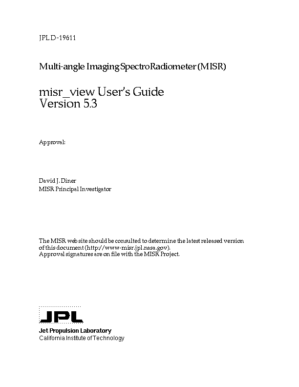
Table of Contents
1.1
Identification
1.2 Overview
1.3
Document Scope
1.4 Method
1.5
Notation And Terminology Conventions
1.6
Controlling Documents
1.7
Applicable Documents
2.1
misr_view System Description
2.1.1
Operational Overview
2.1.1.1
Data Selection and Viewing Software
2.1.2
misr_view Data Products
2.1.2.1
Input Datasets
2.1.2.2
Output Datasets
2.1.2.3
Auxiliary Files
2.2
Using the misr_view Software
2.2.1
misr_view Start-up
2.2.1.1
Source Code Start-Up Procedure
2.2.1.2
Save File Start-Up Procedure
2.2.1.3
Save File Start-Up Procedure Using The IDL Virtual Machine (IDL-VM)
2.2.2
Choosing The Data To Display
2.2.2.1
Selecting A Data File Or Data Catalog
2.2.2.2
Selecting MISR or AirMISR Data
2.2.2.2.1
Selecting AirMISR Source Data
2.2.2.2.2
Selecting MISR Source Data
2.2.2.2.2.1
Specifying MISR Orbit/Path Information
2.2.2.2.2.2
Specifying MISR Block Range Information
2.2.2.3
Selecting Parameters
2.2.2.4
Assigning Selected Parameters To Viewing Planes
2.2.2.5
Selecting Data Resolution
2.2.2.6
Selecting Data Rotation
2.2.2.7
Storing/Recalling Data Selection Parameters
2.2.2.8
Creating A MISR Data Window
2.2.3
Using misr_view Data Windows
2.2.3.1
Linking Windows
2.2.3.2
Un-linking Windows
2.2.3.3
Using Color Tables And Displaying Color Bars
2.2.3.4
Scaling Displayed Data
2.2.3.5
Hiding The Companion Window
2.2.3.6
Showing The Companion Window
2.2.3.7
Transforming Displayed Data
2.2.3.8
Managing The Visible Data Planes
2.2.3.9
Saving Image Data
2.2.3.10
Saving Scientific Data
2.2.3.11
Perspective Viewing
2.2.3.12
Band Slider Tool
2.2.3.13
Scroll Tool
2.2.3.14
Vector Overlay Tool
2.2.3.15
Reprojection Tool
2.2.3.16
Modes
2.2.3.16.1
Zoom Mode
2.2.3.16.2
Pan Mode
2.2.3.17
Dismissing The Data Window
3.1
misr_view System Description
3.1.1
Operational Overview
3.1.1.1
Catalog
3.1.1.2
Data Selection and Viewing Software
3.1.2
misr_view Data Products
3.1.2.1
Input Datasets
3.1.2.2
Output Datasets
3.1.2.3
Auxiliary Files
3.2
Using the misr_view Software
3.2.1
misr_view Start-up
3.2.1.1
Source Code Start-Up Procedure
3.2.1.2.1
Save File Start-Up Procedure
3.2.1.2.2
Save File Start-Up Procedure Using The IDL Virtual Machine (IDL-VM)
3.2.1.3
Splash Screen
3.2.1.4
Eight-Bit Color Options
3.2.2
misr_view Main Console
3.2.2.1
Controls
3.2.2.1.1
Open MISR Catalog/File...
3.2.2.1.2
Show/Hide Data Selection Interface
3.2.2.1.3
Show/Hide Location Map
3.2.2.1.4
Eight-Bit Color Options
3.2.2.1.5
Redefine Orbit-Path-Date Initialization
3.2.2.1.6
Preferences...
3.2.2.2
Quit
3.2.2.3
Help
3.2.3
Choosing the Data to Display
3.2.3.1
MISR: Selecting an Orbit And Path
3.2.3.2
MISR: Selecting Blocks within an Orbit
3.2.3.3
MISR: Selecting Parameters
3.2.3.4
AirMISR: Selecting A File
3.2.3.5
AirMISR: Selecting Parameters
3.2.3.6
Storing And Recalling Data Selection Parameters
3.2.4
Displaying A MISR Data Window
3.2.4.1
Specifying MISR Data for A Data Window
3.2.4.2
Rotate for Stereo Viewing
3.2.4.3
Creating A Data Window
3.2.5
Using A MISR Data Window
3.2.5.1
Companion Window
3.2.5.2
The Utilities Menu
3.2.5.2.1
Link... and Un-link...
3.2.5.2.2
Color Tables And Color Bar
3.2.5.2.3
Stretch DN Interface
3.2.5.2.4
Hide/Show Companion Window
3.2.5.2.5
Transform Data
3.2.5.2.6
Manage Data
3.2.5.2.7
Save Image
3.2.5.2.8
Save Data
3.2.5.3
The Tools Menu
3.2.5.3.1
Perspective Tool
3.2.5.3.2
Band Slider Tool
3.2.5.3.3
Scroll Tool
3.2.5.3.4
Vector Overlay Tool
3.2.5.3.5
Reprojection Tool
3.2.5.4
The Modes Menu
3.2.5.4.1
Zoom Mode
3.2.5.4.2
Pan Mode
3.2.5.5
Kill Button
3.2.5.6
Location Window
3.2.5.7
Accessing Data Values
3.2.5.8
Eight-bit Color
3.2.5.9
Window Title Bar
Appendix B Software Version History
Appendix C Listing of Required Files for Using misr_view Software
Appendix D misr_view Catalog Files
Appendix E misr_view Map Projection Information
Appendix F Creating and Editing misr_view
Transform Files
Figure
1. Splash screen.
Figure
2. Eight-bit color device informational dialog.
Figure
3. misr_view main console.
Figure
4. Select a catalog file.
Figure
5. Orbit-path-date synchronization interface.
Figure
6. MISR data selection interface.
Figure
7. Orbit list.
Figure
8. Parameter selection interface (from the Data button).
Figure
9. Plane display options.
Figure
10. Plane font options.
Figure
11. Resampling options for image rotation.
Figure
12. Image data window and companion window.
Figure
13. Resizeable Color Bar interface.
Figure
14. Stretch DN interface (R option).
Figure
15. Stretch DN interface (Rgb option).
Figure
16. Transformation Information Interface.
Figure
17. Transform Editor Interface.
Figure
18. Manage data.
Figure
19. Save image.
Figure
19b. Save Image Options.
Figure
19c. Save Image Preview Window.
Figure
20. Save data.
Figure
21. Interactive perspective viewer interface.
Figure
22. Perspective viewer surface controls.
Figure
23. Band slider tool controls interface.
Figure
24. Scroll tool controls interface.
Figure
25. MPEG Generation Interface.
Figure
26. Velocity Vector Setup.
Figure
27. Velocity Vector Overlay Result.
Figure
28. Data Reprojection Interface.
Figure
29.
PROJECTION CENTER interface.
Figure
30. PROJECTION EXTENT interface.
Figure
31. PROJECTION WINDOW interface.
Figure
32. OTHER SETTINGS interface.
Figure
33. Projection Preview Window.
Figure
34. Common color map source selection.
Figure
35. Shared color map.
Figure
36. Private color map.
| Date | Release Number | Change |
| July 13, 1998 | 1.0 | Initial Release |
| October, 1998 | 2.0 | External Release |
| August, 2000 | 3.3 | External Release |
| April, 2001 | 4.0 | External Release |
| January, 2002 | 4.1 | External Release |
| November, 2002 | 4.2 | External Release |
| July, 2004 | 4.4 | Internal Release |
| September, 2004 | 5.0 | External Release |
| September, 2005 | 5.2 | External Release |
| May, 2006 | 5.3 | External Release |
misr_view is a graphical user interface-driven display and analysis tool for use with certain types of MISR and AirMISR data. This document describes the use and operations of the misr_view software package. misr_view has been developed by the Visualization and Earth Science Applications Group of the Science Data Processing Systems Section at the Jet Propulsion Laboratory.
misr_view is designed for use with those MISR and AirMISR files that use the HDF-EOS "grid" interface. These include MISR L1B2 georectified (map-projected) radiances, MISR L1B3 radiometric cloud masks, all MISR Level 2 products, the MISR Ancillary Geographic Product, and AirMISR L1B2 georectified radiances. For MISR data, the user interface provides data selection for specified orbits, paths, or observation dates, and enables translation between these modes of identification. The interface to AirMISR data is simplified. The display and analysis tools include simultaneous display of several data planes through color assignment, contrast enhancement, pseudo coloring, data value query, image rotation, creation of stereo anaglyphs, zooming, linked analysis and view windows, vector overlays and map projections. misr_view supports simultaneous viewing of three data planes in color where the different planes may have different native number types and different spatial resolutions. Additionally, there are three ancillary planes which can be populated with data for analysis, and any of these planes may be reassigned to any of the three color planes. Eight bit displays are supported through 24-bit emulation. Data with different number types and disparate spatial resolutions in each of the data planes will be displayed correctly. misr_view supports data transforms that are useful for scaling and unpacking MISR data. Data is stored internally as it's native number type and native spatial resolution for accurate analysis and memory efficiency.
This User's Guide will describe in detail the operation and application of each of the tools available in misr_view, release 4.2. The Tutorial (Section 2) provides a step-by-step example of how to use the misr_view software. The Reference Manual (Section 3) describes each operation and its parameters in detail.
This document identifies and specifies all of the operations of the misr_view system. This document follows the JPL D-4000 Software Management Standards.
Not applicable.
1.5 Notation And Terminology Conventions
Throughout this document, the following terms are used to denote certain mouse manipulations by the user:
- Click
is used to indicate that the cursor is to be positioned on an item, button,
etc., and the left mouse button pressed (if the middle or right mouse buttons
are to be pressed instead, it will be noted in the documentation).
- Double click
is used to indicate two clicks in rapid succession with the left mouse
button.
- Depress
is used to indicate that the left mouse button is pressed down and not
released.
- Mouse release
is used to indicate that a mouse button that has been depressed has been
allowed to return to its undepressed position.
Pulldown menu items are in bold and will be connected in order of selection by an -> (e.g., Controls->Show Location Map).
Figures are not necessarily shown actual size, and the scale of the figures varies throughout the document. All figures were screen-captured using a Silicon Graphics (SGI) workstation and saved as JPEG images.
JPL D-4000 Software Management Standards.
None.
2.1 misr_view System Description
misr_view is written in the Interactive Data Language (IDL), version 6.1, developed by Research Systems, Incorporated (RSI). It provides a graphical user interface (GUI), and is primarily intended for a Sun Microsystems or a Silicon Graphics (SGI) workstation which has IDL 6.1 software installed. Limited testing has occurred on Microsoft Windows systems.
2.1.1.1 Data Selection and Viewing Software
misr_view provides a means of selecting, displaying and analyzing MISR gridded datasets. misr_view allows you to select any available orbits, paths, blocks, and parameters through the use of its data selection interface. Once grid data is displayed, it can be zoomed in or out, panned, linked to other grid data displays, have the DN values scaled, have vectors overlaid and be map projected.
The input datasets used by misr_view are Multi-angle Imaging SpectroRadiometer (MISR) gridded datasets. These datasets consist of a variety of observed multidimensional parameters. It is important to note that the input datasets are all stored in an Earth Observing System (EOS) extension to the Hierarchical Data Format (HDF), specifically the HDF-EOS GRID format.
The version 4.2 release of misr_view allows for displayed parameters to be saved in several image formats (TIFF, JPEG, VICAR) and the Hierarchical Data Format (HDF) scientific format.
There are several auxiliary files that need to be present in addition to the actual program source code; a listing of these auxiliary files can be found in Appendix C. There are no auxiliary output files.
2.2 Using the misr_view Software
The misr_view software can be launched through several different procedures. On UNIX platforms, users may be provided with shell scripts which will, upon invocation, start IDL and launch misr_view. Because the computing environment of each user can vary considerably, the only start-up procedures that will be discussed here in the user's guide will be the two that should work without complication within any user's computing environment, source code start-up and save file start-up. In both cases, the following initial steps should be followed:
- Verify the proper
version of IDL is installed (version 6.1 or higher).
- Create a directory
and place ALL misr_view files in this directory (see Appendix
C for a listing of misr_view files required for both start-up procedures).
- Make sure that the
misr_view directory is the current working directory or edit the IDL !PATH
environment variable (see IDL documentation for more information).
- Enter IDL as follows:
system> idl
Here, system> is the system prompt for the machine on which you are executing the software. After executing the above command, the user will have started IDL; this will be apparent by the typical IDL cursor:
IDL>
2.2.1.1 Source Code Start-Up Procedure
Launch the misr_view software from misr_view source files by first compiling a routine that in turn compiles all the misr_view modules in the correct order, followed by typing "misr_view" at the IDL prompt, as follows:
IDL> .compile compile_all
IDL> misr_view
Please refer to the supplied README file for updated instructions on launching misr_view.
2.2.1.2 Save File Start-Up Procedure
Launch the misr_view software from the misr_view save file as follows :
IDL> restore, misr_view.sav
IDL> misr_view
2.2.1.3 Save File Start-Up Procedure Using The IDL Virtual Machine (IDL-VM)
Users who do not have a licensed copy of IDL can still use misr_view with the IDL Virtual Machine (IDL-VM). The Virtual Machine is available at no charge from the RSI website (www.rsinc.com). Once the IDL-VM is installed, launch the misr_view software by selecting the save file misr_view.sav. For the latest information on the IDL-VM and specific instructions on launching it from different platforms, please refer to the supplied README file.
2.2.2 Choosing The Data To Display
2.2.2.1 Selecting A Data File Or Data Catalog
On the misr_view main console (Figure 3) click on Controls->Open MISR Catalog/File..., then select either a MISR HDF-EOS grid file or an existing misr_view catalog file (see Appendix D for an example of a misr_view data catalog file).
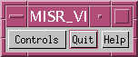
Figure 3. misr_view Main Console
2.2.2.2 Selecting Source Data: MISR or AirMISR
Click on either the MISR or AirMISR toggle buttons located at the top of the data selection interface to specify the type of data to load; the default selection is the MISR toggle button.
2.2.2.2.1 Selecting AirMISR Source Data
If the AirMISR toggle button is selected, click on the Find/Select AirMISR Data File button and select an AirMISR file.
2.2.2.2.2 Selecting MISR Source Data
If the MISR toggle button is selected, orbit and path information needs to be specified, as well as a block range. Orbit and path information can be specified via the Choose MISR Orbit toggle button; block range can be specified via the Choose MISR Blocks toggle button.
2.2.2.2.2.1 Specifying MISR Orbit/Path Information
With the Choose MISR Orbit toggle button selected, click on the Orbit Date and Orbit GMT buttons as necessary to specify the desired time. Alternatively, specify the path and orbit of the data product via the Path and Orbit text entries.
2.2.2.2.2.2 Specifying MISR Block Range Information
With the Choose MISR Blocks toggle button selected, enter the desired starting and ending block values in the Start Block and End Block text entries, respectively. Use the Enter key to register the new block values and to update the map, which may be used interactively to select blocks by dragging the lines north and south.
On the misr_view data selection interface (Figure 6), click on the Data button; then, in the MISR Data Menu interface (Figure 8), click on the desired product, grid, and field to be displayed from the respective lists (also click on the desired dimensions if the selected field has dimensions other than XDim, YDim, and SOMBlockDim). Click on OK to dismiss the MISR Data Menu interface. A concatenated text string representing the currently-selected product, grid, and field will be displayed in the data selection interface adjacent to the Data button.
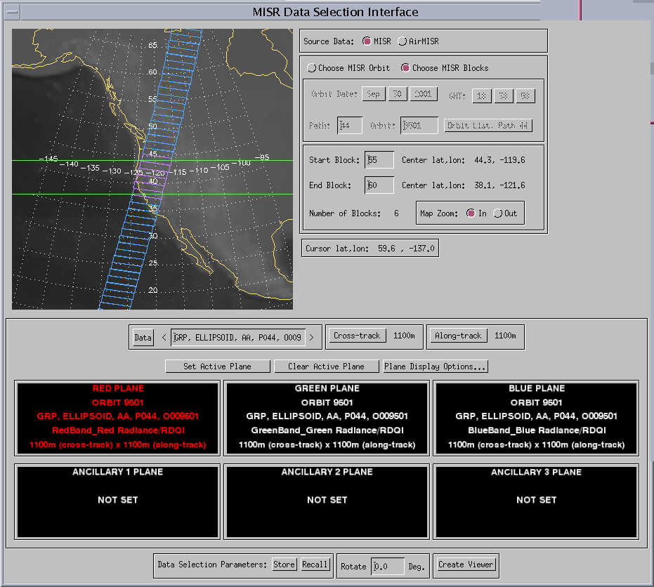
Figure
6. Data Selection Interface

Figure 8. The Data Button Interface, Selecting MISR Parameters
2.2.2.4 Assigning Selected Parameters To Viewing Planes
Every MISR data window (Figure 12) has six associated "data planes"; the user can assign parameters to one or all of the planes, but only three planes maximum can be viewed simultaneously. To load the current parameter into one of these planes, click on one of the six plane widgets located in the bottom half of the data selection interface; the text within the plane widget should turn red, green, blue or lavender, depending on which plane was selected. Click on the Set Active Plane button to assign the current parameter to the active data plane (the text within the active plane widget should update to reflect its contents).
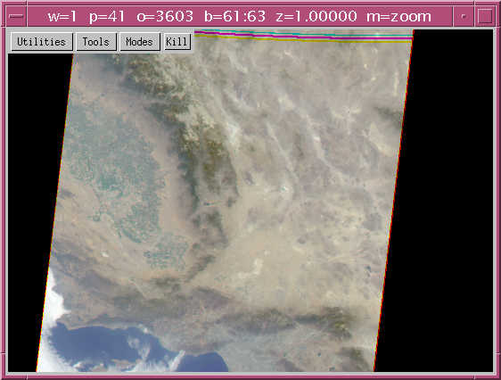
Figure 12. MISR Data Window and Companion Window
Click on the Across-track or Along-track buttons above the plane widgets to select the desired resolution of the parameters that have been loaded into the plane widgets. The plane widgets should automatically update their text to reflect any changes made using the resolution buttons.
2.2.2.6 Selecting Data Rotation
If desired, data to be loaded into a MISR data window can be rotated via the Rotate text entry located at the bottom of the data selection interface. Enter a value in degrees by which the data to be displayed should be rotated. Data that is to be viewed as an anaglyph may need to be rotated by a certain number of degrees in order to obtain depth perception (i.e., orient the offset that allows depth perception so that the displacement is horizontal.) See Section 3.2.4.2 for more information on rotating data and anaglyphs.
2.2.2.7 Storing/Recalling Data Selection Parameters
All of the data selection parameters shown in the Data Selection Interface may be stored and later recalled. This is done by using the Store and Recall buttons at the bottom of the interface.
2.2.2.8 Creating A MISR Data Window
After all orbit, path, block, and parameter information has been specified, click on the Create Viewer button located at the bottom of the data selection interface.
2.2.3 Using misr_view Data Windows
misr_view data windows are sophisticated, interactive displays which can manipulate their contents via several modes and utilities which are available through the data window menu, toggled on and off by clicking the right-hand mouse button within the data window display area. The standard data window's menu bar contains the following four menus: Utilities, Tools, Modes, and Kill (reprojected data can have an additional menu, as explained later). There is a companion window associated with each data window which displays and continually updates the longitude, latitude, block number, block-x, block-y, and data values at the location of the cursor whenever it is within the data display region of the window.
If two or more georeferenced data windows are displayed, select Utilities->Link... from the menu of one of the displayed windows and click the mouse in the display area of another data window. The two windows should then be linked in that, whenever the mouse is moved in one of the linked data windows, a simulated cursor appears in the other linked window, located at a point of corresponding latitude and longitude.
Select Utilities->Un-link... to decouple previously-linked data windows.
2.2.3.3 Using Color Tables And Displaying Color Bars
Select Utilities->Color Tables and Color Bar; the Xloadct interface and a color bar will appear. Use the Xloadct interface to modify the currently-active color table or to specify another set of colors.
2.2.3.4 Scaling Displayed Data
Select Utilities->Show Stretch DN Interface; the Stretch DN Interface will appear. Manipulate Minimum Value and Maximum Value sliders for specifying the range of data values to be scaled. Enter values into Lower Limit and Upper Limit text entry boxes if minimum and maximum values of data range should not be scaled to 0 and 255, respectively. Hide the Stretch DN Interface by clicking on the Dismiss button or by selecting Utilities->Hide Stretch DN Interface. See Section 3.2.5.2.3 for more information on the Stretch DN Interface.
2.2.3.5 Hiding The Companion Window
Select Utilities->Hide Companion Window to hide a displayed companion window.
2.2.3.6 Showing The Companion Window
Select Utilities->Show Companion Window to display a hidden companion window.
2.2.3.7 Transforming Displayed Data
Select Utilities->Transform Data...; the Transform Data Interface appears. Click on one of the View/Edit Transform buttons associated with each data set that is loaded into the data window; the Transformation Information Interface appears. Click on the Recall Transform... button and select a transform file; the contents of the transform file will be displayed in the Transform Commands and Transform Information text areas. Click on the Apply button to effect the new transform. Please refer to Section 3.2.5.2.5 for a detailed description of this utility.
2.2.3.8 Managing The Visible Data Planes
Select Utilities->Manage Data...; the Data Manager Interface appears. Move data into and out of the visible planes (red, green, and blue) through the use of the Red Plane, Green Plane, and Blue Plane droplists. Toggle on or toggle off any of the visible display planes via the Display Red Plane, Display Green Plane, and Display Blue Plane check boxes.
Select Utilities->Save Image...; the Save Image interface appears. Select desired format using TIFF, JPEG, and VICAR radio buttons. Select extent of data to be saved by toggling the ALL LOADED BLOCKS and VIEWED AREA ONLY radio buttons. Press the Select... button and enter the name of the output file. Press the Save button and click the No button when asked if annotations are desired.
2.2.3.10 Saving Scientific Data
Select Utilities->Save Data...; the Save Scientific Data interface appears. Select the desired output format using the HDF, NetCDF, Binary, and VICAR radio buttons. Press the Save button and enter the name of the output file.
Select Tools->Perspective Tool...; observe the two warnings regarding potential network problems and data size limitations. When the Display Perspective Setup interface appears, use the Select Data To Be Used As Elevation droplist to specify which parameter within the data window is to be used as elevation data. Click on one of the Use Entire Data Extent/Use Displayed Data Extent toggle buttons, then press the OK button. The Satellite and Topographic Data Fly-through interface appears. Please refer to Section 3.2.5.3.1 for more information on this interface.
Select Tools->Band Slider Tool; at least two parameters must be loaded into the data window. The Band Slider Tool window and its accompanying Slider Controls interface appear. Use the red, green, and blue check boxes on the Slider Controls interface to select one or more active data bands. Select one of the horizontal, vertical, or free radio buttons to specify the band movement type that is to occur. Enter the movement increment in the Horizontal increment and Vertical increment text boxes. Use either the arrows on the Slider Controls interface to "slide" the active data bands, or depress the mouse within the Band Slider Tool window and "drag" the active bands interactively. This tool may be useful when attempting to view anaglyphs; single bands of data can be moved around in order to optimize stereo viewing. Please refer to Section 3.2.5.3.2 for more information.
Select Tools->Scroll Tool; the Scroll Window and its accompanying Scroll Controls interface appear. Click on the forward or reverse arrows on the Scroll Controls interface to scroll through the displayed data. Move to a particular point in the scroll path by moving the Scroll Position (%) slider. Increase or decrease scroll speed by moving the Scroll Speed (%) slider.
Select Tools->Vector Overlay Tool...; the Velocity Vector Setup interface appears. Click on the droplists for X-Component (U): and Y-Component (V): to select data for the U and V components of the vectors to be displayed. Manipulate the Color To Draw Vectors:, Vector Line Thickness:, and Relative Vector Line Length: droplists to set some of the primary characteristics of the vectors. Click on the Reproject Data... check box to display the vectors over reprojected data. If this check box is set, the Data Reprojection Interface will appear (described below in Section 2.2.3.15) and the data over which the vectors will be drawn will be reprojected first. Whether data is reprojected or not, the Velocity Vector Overlay Result window will eventually be created. This window will display the results of the vector overlay process in a window with scroll bars. The displayed image can be saved by pressing the Save As TIFF... button.
Select Tools->Reprojection Tool...; the Data Reprojection Interface appears. Use the PROJECTION PARAMETERS: droplist to display information pertaining to PROJECTION CENTER, PROJECTION EXTENT, PROJECTION TYPE, PROJECTION WINDOW, and OTHER SETTINGS. Click on the Do Reprojection button to start the reprojection process. Eventually, a data window displaying the reprojected data will appear. The data window displaying the reprojected data will have an additional menu, Projection Info, which, when selected, will display the reprojection parameters that were used to reproject the data. Please refer to Section 3.2.5.3.5 for detailed information regarding this tool.
misr_view data windows can be in two distinct modes, zoom mode and pan mode; these are available through the data window's Mode menu. The current mode is indicated with a right-pointing (">") caret adjacent to the currently-active menu item (e.g., ">Zoom").
In this mode, clicking in an area within the data window display region causes the display to be zoomed in or zoomed out by a factor of two. The zoom in centered on the point clicked upon. Click the left-hand mouse button to zoom out; click the middle mouse button to zoom in.
In this mode, dragging the mouse within the data window display region will move the displayed data area in the direction of the mouse movement (assuming that not all of the data is displayed within the data window). Depress the left-hand mouse button over the data display region and drag the mouse in the desired direction of movement. Once the mouse is released, the window will update to display accordingly.
2.2.3.17 Dismissing The Data Window
Click on the Kill
menu item to destroy a data window.
3.1 misr_view System Description
misr_view is written in the Interactive Data Language (IDL), version 6.1, developed by Research Systems, Incorporated (RSI). It provides a graphical user interface (GUI), and is primarily intended for a Sun Microsystems or a Silicon Graphics (SGI) workstation which has IDL 6.1 (or a higher version) software installed. The mouse must have three buttons, or functional equivalent.
Prior to selecting and displaying MISR gridded parameters, the user can create a misr_view catalog file. A catalog file is a textual list of file names of gridded MISR HDF-EOS datasets that are to be made available to the misr_view display software. Each line in the catalog file consists of a fully qualified MISR HDF- EOS file name (e.g., /home/usr/misr_grid_file.hdf). This file can be created by the user with any text editor (be sure to save it as "text only") or by some automated routine that the user may devise (none is provided). When the misr_view display software is run, the small main interface has a Controls button that contains a menu item called Open MISR Catalog / File. This is how the catalog is imported. The user may change catalogs at any time, although the previous catalog will be replaced by the new one. The catalog file is used as the basis for creating any menus that display datasets available to the user.
3.1.1.2 Data Selection and Viewing Software
misr_view provides a means of selecting, displaying and analyzing MISR gridded datasets. misr_view allows you to select any available orbits, paths, blocks, and parameters through the use of its data selection interface. Once grid data is displayed, it can be zoomed in or out, panned, linked to other grid data displays, have the DN values scaled, and perform various other functionality as described within this document.
The input datasets used by misr_view are Multi-angle Imaging SpectroRadiometer (MISR) gridded datasets. These datasets consist of a variety of observed multidimensional parameters. It is important to note that the input datasets are all stored in an Earth Observing System (EOS) extension to the Hierarchical Data Format (HDF), specifically the HDF-EOS grid format.
misr_view allows data to be saved as assembled arrays (as opposed to MISR blocks.) These arrays may be saved as 24-bit color images, or as science data at its native bit depth.
There are several auxiliary files that need to be present in addition to the actual program source code; a listing of these auxiliary files can be found in Appendix C. There are no auxiliary output files.
3.2 Using the misr_view Software
The misr_view software can be launched through several different procedures. On UNIX platforms, users may be provided with shell scripts which will, upon invocation, start IDL and launch misr_view. Because the computing environment of each user can vary considerably, the only start-up procedures that will be discussed here in the user's guide will be the two that should work without complication within any user's computing environment, source code start-up and save file start-up. In both cases, the following initial steps should be followed:
- Verify the proper
version of IDL is installed (version 6.1 and higher).
- Create a directory
and place ALL misr_view files in this directory (see Appendix
C for a listing of misr_view files required for both start-up procedures).
- Make sure that the
misr_view directory is the current working directory or edit the IDL !PATH
environment variable (see IDL documentation for more information).
- Enter IDL as follows:
system> idl
Here, system> is the
system prompt for the machine on which you are executing the software.
After executing the
above command, the user will have started IDL; this will be apparent by
the typical IDL cursor:
IDL>
3.2.1.1 Source Code Start-Up Procedure
Launch the misr_view software from misr_view source files by first compiling a routine that in turn compiles all the misr_view modules in the correct order, followed by typing "misr_view" at the IDL prompt, as follows:
IDL> .compile compile_all
IDL> misr_view
Please refer to the supplied README file for updated instructions on launching misr_view.
3.2.1.2.1 Save File Start-Up Procedure
Launch the misr_view software from the misr_view save file as follows :
IDL> restore, misr_view.sav
IDL> misr_view
3.2.1.2.2 Save File Start-Up Procedure Using The IDL Virtual Machine (IDL-VM)
Users who do not have a licensed copy of IDL can still use misr_view with the IDL Virtual Machine (IDL-VM). The Virtual Machine is available at no charge from the RSI website (www.rsinc.com). Once the IDL-VM is installed, launch the misr_view software by selecting the save file misr_view.sav. For the latest information on the IDL-VM and specific instructions on launching it from different platforms, please refer to the supplied README file.
Upon successfully launching misr_view, a splash screen (Figure 1) indicating the current misr_view software version and the minimum version of IDL required will be displayed for several seconds, then disappear.

Figure 1. Splash screen.
3.2.1.4 Eight-Bit Color Options
When misr_view detects that an 8-bit color device is being used, an informational dialog box (Figure 2) will appear. Since it is possible to emulate a 24-bit color device on an 8-bit system, the dialog box informs the user of the options available to optimize the way colors are handled within misr_view. A complete explanation regarding 8-bit color options is provided in Section 3.2.5.8.
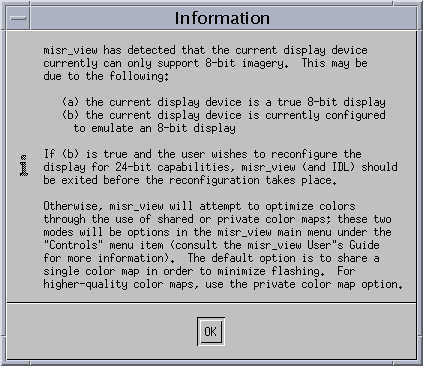
Figure 2. Eight-bit Color Device Informational Dialog
The primary purpose of the misr_view main console (Figure 3) is to allow the user to toggle certain displays and interfaces on and off. The console consists of a menu bar containing three menus: Controls, Quit, and Help.
Figure 3. misr_view Main Console
The Controls menu contains six items: Open MISR Catalog/File..., the Hide Data Selection Interface/Show Data Selection Interface toggle item, the Hide Location Map/Show Location Map toggle item, Eight-Bit Color Options (not shown if misr_view is being displayed on a 24-bit device), Redefine Orbit-Path-Date Initialization, and Preferences.... The two toggle items can be activated to turn off or turn on the interfaces for data selection and for the location map, respectively. For more information on the purposes of these interfaces, please refer to Sections 3.2.3 and 3.2.5.6. Each of these menu items is described below.
3.2.2.1.1 Open MISR Catalog/File...
The Open MISR Catalog/File... menu item allows the user to identify data files whose contents are to be actively available to misr_view. When this item is selected, a dialog box (Figure 4) appears requesting that the user select a MISR data file directly or a misr_view catalog file. Once the dialog box is dismissed by pressing the OK button, misr_view determines the type of the selected file. If the specified file is a catalog file, the data files listed within the catalog are parsed immediately so that the user has access to the contents of these files via the data selection interface. If the file is a data file, misr_view treats this file as a single catalog entry, and the same process occurs as with the catalog file processing procedure. Opening a data file or catalog file will eliminate misr_view's knowledge of any previously opened data files or catalogs.

Figure 4. Select MISR Data Catalog or MISR Data HDF-EOS File
3.2.2.1.2 Show/Hide Data Selection Interface
This menu item allows this interface to be made hidden (not visible on screen) and to be recalled (made visible on screen again.) For reasons regarding implementation, the Data Selection Interface cannot be "minimized."
3.2.2.1.3 Show/Hide Location Map
This menu item allows the global location map to be made visible or hidden.
3.2.2.1.4 Eight-Bit Color Options
When misr_view is run on an 8-bit color device, there is an additional item under the Controls menu item on the misr_view main console: 8-Bit Color Options. A complete explanation regarding 8-bit color options is provided in Section 3.2.5.8.
3.2.2.1.5 Redefine Orbit-Path-Date Initialization
This item brings up the Set Initial Orbit-Path-Date Information interface (Figure 5) that is used to synchronize MISR orbit numbers (monotonically-ascending) with path numbers (1-233). The controls that comprise this interface are described below. For the purposes of viewing MISR datasets obtained from the MISR instrument while operational (as opposed to simulated data) THE USER SHOULD NOT CHANGE THE DEFAULT VALUES FOR ANY OF THE CONTROLS.

Figure 5. Interface for Reinitializing Orbit-Path-Date Synchronization
In the center of the synchronization interface are six droplists corresponding to initial year, month, day, hour, minute and second information: Initial Year, Initial Month, Initial Day, Initial Hour, Initial Minute, and Initial Seconds. Clicking on the current value of any of these controls will reveal a droplist in which the user can change the current value by clicking on the desired value within the corresponding droplist.
Below the date and time controls are two text entry boxes: Orbit # and Corresponding Path. These widgets allow the user to enter an orbit number and a corresponding path number to which the orbit should be synchronized.
The OK button accepts the values entered in the controls described above; the Defaults button resets all of the controls in the synchronization interface to default values.
This item brings up the misr_view Preferences interface; currently, this interface only allows the user to change the location of the misr_view_DEFAULT_TRANSFORMS file (used by the Transform Data... utility associated with each data window; please refer to Section 3.2.5.2.5 for more information). To specify a new location for this file, click on the Change... button and enter the new location.
Clicking on the Quit button will terminate misr_view. A confirmation dialog interface will appear to confirm that the user wishes to quit misr_view, or cancel the quit command.
Clicking on the Help button will cause the misr_view splash screen to be displayed for several seconds, then disappear.
3.2.3 Choosing the Data to Display
The misr_view data selection interface allows the user to select either MISR or AirMISR data through the use of the MISR and AirMISR source data toggle buttons located near the center of the data selection interface (Figure 6). Since the data selection protocol of these two datasets differs significantly, the upper portion of the data selection interface has two distinct modes to facilitate the selection of each of these data types. When the MISR toggle button is activated, the user is presented with a group of controls that allow selection of MISR data by path, orbit, date, and time. The map in the upper left of the interface is also interactive, meaning that, if the user clicks on an area of the map, a response is generated.
When the AirMISR toggle button is selected, the map becomes passive, meaning that a mouse click within the map area is ignored.
The details on these two distinct modes for data selection are described below.
3.2.3.1 MISR: Selecting an Orbit And Path
With the misr_view data selection interface, the user has several options with respect to how a specific orbit and path combination is chosen. Path refers to one of the 233 paths (which orbits follow) in the repeating cycle that MISR has over the Earth. Orbit refers to the chronologically and monotonically increasing unique numbers that are assigned to each successive pass over the Earth, with each of these passes corresponding to one of the 233 paths. (For more information regarding paths and orbits, please refer to http://www- misr.jpl.nasa.gov.)
In order to begin making path and/or orbit selections, the user must first select the choose orbits mode (choose blocks is the default mode). This mode can be selected by clicking on the Choose Orbits button located near the center of the data selection interface (Figure 6). When in choose orbits mode, the upper portion of the data selection interface contains all of the controls that are used to choose a path and orbit combination. These include an interactive map of the world, buttons for selecting month, day, and year, GMT hour and minute buttons, text entries for choosing path and orbit numbers, and an orbit list button. The Orbit List button (Figure 7) displays all previous orbits that have occurred along the currently selected path. All of these controls allow the user to specify path and orbit combinations in various ways, giving the user great flexibility in the specification technique.
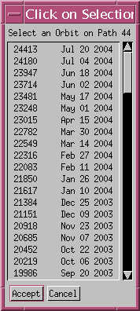
Figure 7. Orbit List
The selectable map control allows the user to click on a geographic point on the map in order to specify path and orbit. The map is re-drawn centered on the equatorial longitude of the path corresponding to the path whose centerline passes closest to the cursor location. In this manner, latitude is taken into account, given the meandering swath of the path as it tracks north and south. Holding the mouse button and scrolling around the selectable map results in real-time updates of the path, orbit, date and time displays. The mouse motion is tracked by crosshairs giving a visual cue as to the current location. Once the mouse is released, the crosshair will disappear, and the map will be re-drawn.
The month, day, and year buttons allow the user to explicitly select any or all three of these temporal periods by depressing the left mouse button on one of the three items and selecting one of the displayed months, days, or years, respectively. This set of controls allows the user to select path and orbit by a specific date.
The GMT hour and minute buttons are similar to the month, day, and year buttons in operation and allow the user to additionally select a specific time of day in Greenwich Mean Time (GMT) to the nearest 5 minute interval. This control enables the user to select path and orbit given a known GMT. The orbit time refers to the orbit start time, which is the dark (night) side equator crossing.
The Path and Orbit text entry items allow the user to enter specific path and orbit numbers. The return key must be pressed to register the new orbit number in the text widget. Selecting a path value results in the orbit value being updated to the most recent orbit along that path. Whereas, selecting an orbit value results in the path value being updated to the corresponding path number (every orbit lies on one of the 233 paths in the 16-day repeat cycle.)
The Orbit List button brings up a selectable list allowing the user to choose any orbit that has occurred (up to the current date and time) along the selected path.
All of these controls are linked; that is, changing or modifying any one of these controls will cause the remaining controls to be updated to reflect the change. Whenever updating occurs and the map is redrawn, the catalog file is consulted in order to determine which paths and orbits have available datasets (those files listed in the catalog file), and the Data button (described in Section 3.2.3.3) will be disabled if no corresponding datasets are found. To reactivate the Data button, it may be necessary to consult the catalog file and see what path and orbit combinations are available, and then choose one of those combinations.
3.2.3.2 MISR: Selecting Blocks within an Orbit
As with the path/orbit selection process, the user has various options as to how to specify blocks of interest. In order to begin making selections, the user must first enter choose blocks mode; this is accomplished by clicking on the Choose Blocks button located near the center of the data selection interface (Figure 6). Choose blocks mode is the default on start-up.
When in choose blocks mode, the upper portion of the data selection interface contains controls used to choose blocks. These include an interactive map of the world, two block text entry controls representing the start and end block numbers of the desired range, and zoom control buttons. In choose blocks mode, the selectable map control allows the user to click on the map in order to specify the start or end of a range of blocks. When the user depresses the left cursor button on the selectable map, a horizontal line appears at the cursor location. There are two lines, the northernmost being for the start block and the southernmost being for the ending block. Using the mouse, these lines can be dragged up and down to select the block range. The active range of selected blocks is drawn in a different color.
Alternatively, the user can specify starting and ending block numbers by typing block numbers in the text entry areas. It is necessary to use the return key to register new values in text boxes. The bounding lines will update themselves to reflect the block numbers entered.
The zoom buttons control the scale of the selectable map. There are only two scales available, global (zoom out) and local (zoom in). The map is interactive in both modes. Local mode uses the center latitude and longitude of the center block in the currently selected range as the map center when reprojecting. In local mode if the number of selected blocks is large, then it is possible that some blocks at the ends of the selected block range will fall outside the map window. The text entry for selecting blocks that fall outside of the area mapped in local mode will not work. In this case, use global zoom.
Occasionally the selectable map will draw the block outlines incorrectly. A workaround for this problem is to zoom in and back out again, and the map will correct itself.
3.2.3.3 MISR: Selecting Parameters
Selecting MISR parameters is accomplished by clicking on the Data button located in the left central portion of the misr_view data selection interface (Figure 6). When the user clicks on this button, the parameter selection interface (Figure 8) appears and allows the user to select a MISR data product via grid, field, and field dimensions if the field has more dimensions than SOMBlockDim, SOMYDim, and SOMXDim (for more information on how MISR gridded data is stored, please refer to http://www-misr.jpl.nasa.gov). Each list in this interface is "controlled" by the list directly above it. So, for example, if the user highlights a particular grid in the GRID list, the FIELD list below the GRID list will update itself to reflect the current fields associated with the newly selected grid. The DIMENSION lists, should they be visible and active, will also update themselves based upon the highlighted field in the FIELD list. By default, when any list is automatically updated, the first entry in the list is highlighted. However, the interface remembers the current highlighted selections in each list so that, when the interface is brought up again later (after it's been dismissed), the previous highlighted settings for each list remain.
Figure 8. The Data Button Interface, Selecting MISR Parameters
If the Data button is grayed-out or inactive, it is a visual clue to the user than no data is active for the current path and orbit selections (see Section 3.2.3.1).
Once the user presses the OK button, the highlighted values from each list are displayed in the text box directly to the right of the Data button on the data selection interface, indicating that this is the current data selection. If the name of the selection exceeds the width of the text box then the text will be scrollable in the horizontal direction.
3.2.3.4 AirMISR: Selecting A File
To work with AirMISR data, the Choose AirMISR Data toggle button needs to be activated. This will cause the upper portion of the interface to be much simplified, and the only control will be a single button: Find/ Select AirMISR Data File. Clicking on this button will cause a file selection dialog box to appear. The user can then locate and select an AirMISR data file.
3.2.3.5 AirMISR: Selecting Parameters
Once an AirMISR file has been selected, the Data button is used in much the same manner as with MISR data (refer to Section 3.2.3.3). After one or more parameters have been selected from the current AirMISR file, a different AirMISR file may be selected and more parameters selected as long as the new AirMISR file contains data that is co-registered with all of the currently selected parameters. (AirMISR data are typically stored in 9 different files by camera angle.) Thus, parameters from multiple AirMISR angles can be loaded into the various view planes.
Note that changing the mode using the Choose MISR Data and Choose AirMISR Data buttons will nullify any view plane selections that have been made; that is, it is not possible to view MISR and AirMISR data in different view planes in the same instance of a viewer (refer to Section 3.2.4.1).
3.2.3.6 Storing And Recalling Data Selection Parameters
At the bottom of the data selection interface are controls to store and recall sets of data selection parameters. All of the selected parameters in the data selection interface can be stored in an ASCII text file for later recall. The parameters that get stored include catalog or filename, path, orbit, blocks, resolution, all information contained in the red, green, blue and ancillary data planes, and rotation value. Any parameters, such as the catalog, are not stored if they are not present. On recall, the catalog or file, if present, will be parsed and the data button made active, so that after a recall the parameters may be changed in the usual manner.
Store files can be edited with any text editor. A template store file can be saved by entering misr_view and immediately storing the default parameters. This template, or any store file, can be edited to create custom sets of parameters. The store file is expected to have the general format of parameter = value. Using a template is the best way to see how these should be constructed, especially a template that has been generated after some data has been selected from either a catalog or a file. If there are extra dimensions beyond the normal product, grid and field dimensions, these are specified in a blank-separated list following the parameter name. Here is an example: plane0:extraDims= 0 0, where for plane 0 use the first dimension of the first extra dimension.
The terms "store" and "recall" are used to avoid confusion with the IDL standard terms "save" and "restore", which have specific meanings that are different from those used in this case.
3.2.4 Displaying A MISR Data Window
3.2.4.1 Specifying MISR Data for A Data Window
Loading data into a MISR data window is accomplished with the controls located in the lower half of the misr_view data selection interface (Figure 6). These controls include the Cross-track button, the Along-track button, the Set Active Plane button, the Clear Active Plane button, the Plane Display Options... button, and six data window plane controls: the RED PLANE, GREEN PLANE, BLUE PLANE, ANCILLARY 1 PLANE, ANCILLARY 2 PLANE, and the ANCILLARY 3 PLANE.
The Cross-track and Along-track buttons allow the user to select one of seven possible resolutions for the data to be ingested into the MISR Data Window, 275 meters, 550 meters, 1100 meters, 2200 meters, 4400 meters, 8800 meters, and 17600 meters. The user can select one of these six resolution values for along-track or across-track by clicking on one of the buttons and highlighting the desired resolution. The current resolutions for along-track and across-track are displayed in text entries directly to the right of each button.
The six plane controls each display information regarding the data loaded into that particular window plane. Each MISR data window can have up to six parameters associated with it; data that is loaded into a MISR data window's red, green, and blue viewing channels via the RED PLANE, GREEN PLANE, and BLUE PLANE controls are displayable within the data window. Data that are loaded into the window via one of the ancillary planes are not viewable, but can have their data values accessed. (refer to Section 3.2.5.7 regarding accessing data values specifically, and to Section 3.2.5 regarding the operation of the MISR data window in general.)
To load data into a particular plane control, the user must activate the desired plane; this is accomplished by clicking within the desired window plane control. The text within the selected window plane should become colored; this is a visual cue to the user that this plane is the current active plane. Clicking on the Set Active Plane button will load whatever data is currently selected (for information on how to select MISR data, please refer to Section 3.2.3.3). Information regarding the loaded dataset will be displayed inside the active window plane, including orbit number (orbit number will not be displayed for AirMISR data), parameter, and across-track and along-track resolutions. Any combination of view planes may be loaded or left unloaded.
The Clear Active Plane button reverses the action of the Set Active Plane button; that is, it removes any data loaded into the currently active plane.
When the user clicks on the Plane Display Options... button, the plane display options interface (Figure 9) appears which allows the user to specify certain display characteristics for the currently active plane via three buttons: Zoom In, Zoom Out, and Change Text Style. This functionality is provided for user control to increase readability of the information in the window plane control, if necessary. Clicking on Zoom In or Zoom Out will cause the text displayed within the currently active window plane to become larger or smaller, respectively.
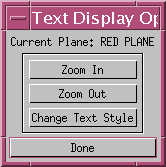
Figure 9. Plane Display Options
Clicking on the Change Text Style button will bring up the Change Text Styles interface (Figure 10) with Fonts, Sizes, and Done buttons. Clicking on the Sizes button will display all currently available font sizes for use within the window planes; highlighting the size of choice will make that size become the active size, and it will appear adjacent to the Sizes button. Clicking on the Fonts button will display all currently available fonts for use within the window planes; highlighting the font of choice will make that font become the active font, and it will appear adjacent to the Fonts button. Clicking on Done will dismiss the Change Text Styles interface.
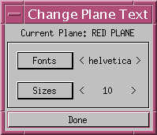
Figure 10. Change Text Styles Interface
Clicking on the Done button will cause the plane display options interface to disappear.
3.2.4.2 Rotate for Stereo Viewing
Data to be displayed may be rotated for viewing by entering a rotation value in the Rotate text box at the bottom of the data selection interface. The rotation value must be entered BEFORE clicking the Create Viewer button, which is described in Section 3.2.4.3. The data will be rotated in degrees clockwise. If the user enters a value that is outside the range of 0.0 <= value < 360.0, the value will be computed to the corresponding angle that is within that range. This correction will always occur prior to rotation, but a carriage return is required for the corrected value to appear in the Rotate text box. Counter-clockwise rotations can be specified using negative numbers. For example, if the user requires a rotation of 90 degrees counterclockwise, a value of -90 may be entered and it will be converted to a value of 270.
The rotation algorithm works in 2 modes: increments of 90 degrees (0, 90, 180, 270) and arbitrary angles. For increments of 90 degrees, rotation is a matter of array transposition. However, for arbitrary angles, the array grid must be resampled. When the Create Viewer button (described in Section 3.2.4.3) is invoked, if an arbitrary angle is detected then the user will be asked (Figure 11) to select a method for resampling the data.
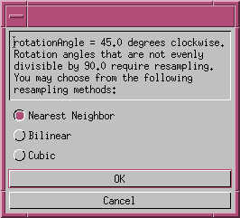
Figure 11. Rotation Options
The primary purpose for providing image rotation functionality is red-blue stereo viewing through the loading of different camera angles in the red and blue view planes. In order for this to work, the data must be rotated 90 degrees (either clockwise or counterclockwise depending on which angles are selected for the opposing stereo halves) so that the angular displacement is in the horizontal direction. Red-blue stereo may be more effective if the image data in the blue channel is also loaded into the green channel; DN stretching of each individual channel may also contribute to a more effective stereo display. Since red-blue stereo viewing effectiveness is at least partially a function of the local display device characteristics and settings such as brightness, contrast, ambient lighting and device type, the user should experiment with these variables including, perhaps, optimizing the ambient viewing environment. This may go a long way towards achieving satisfactory results. Red-blue stereo glasses will, of course, be required.
The default mode for image resampling for arbitrary rotation angles is nearest neighbor, which has the advantages of being the fastest method and preserving native data values without interpolation. However, image quality for viewing may be compromised, especially in combination with large zoom factors. The bilinear option provides good image quality, but the cubic method will theoretically preserve the highest image quality for viewing. Data interpolation by its very nature will usually create data values that may not be a previously existing value anywhere in the image. If native data values are required for any reason, then use the nearest neighbor method. Rotation values divisible by 90.0 will not involve interpolation.
Rotation at arbitrary angles is provided for generality. Here is an example of potential usage: the correct rotation angle for stereo viewing corresponding to precise horizontal displacement may be something other than exactly 90 degrees (clockwise or counterclockwise). In this example, the user should refer to more detailed descriptions of MISR data acquisition geometry for accurate information regarding displacement angles (http:// www-misr.jpl.nasa.gov). However, 90 degrees should provide a usable first approximation for stereo viewing.
3.2.4.3 Creating A Data Window
Once the user has loaded data into the desired window planes on the lower half of the data selection interface via the methodology described in Section 3.2.4.1, the Create Viewer button (located at the bottom of the data selection interface) can be clicked upon. This will create and bring to the forefront of the screen a MISR data window with the specified datasets loaded.
3.2.5 Using A MISR Data Window
Once a MISR data window is created (Figure 12), most of its functionality is accessible through its menu bar. The menu bar is toggled on and off by clicking the right mouse button anywhere within the display region of the data window. There are four standard menu items in a MISR data window menu bar: Utilities, Tools, Modes, and Kill. A fifth menu, Projection Info, appears in any data window containing data that has been reprojected using the reprojection tool. This section of the manual will explain how to activate the various functions provided in the menu bar.
When a MISR data window is displayed, it always appears with a companion window (Figure 12). The companion window reports latitude, longitude (if available) and data value(s) of all loaded datasets at the current cursor location. Cursor location is reported in "block space" using block #, block-x, and block-y coordinates. As the cursor moves around the data window, the query window is continuously updated to reflect the current block number , block coordinates, and data point values of datasets associated with the current position of the cursor. If the cursor is moved off of the data area, the query window will report "Off Map". If for any reason the query window is killed, it will be recreated when the cursor is moved back over the data window. Block coordinates are set up so that, for any one block, block # increases southward (downward), block-x increases southward (downward), and block-y increases eastward (to the right).
The Utilities menu contains several entries: Link..., Un-link..., Load Color Tables, Show Stretch DN Interface, Hide Companion Window, Transform Data..., Manage Data, Save Image... and Save Data....
3.2.5.2.1 Link... and Un-link...
Link... and Un-link... allow the user to link together certain functionality of two or more georeferenced MISR data windows. Clicking on the Link... button will bring up a message that asks the user to click within the display area of another MISR data window. If this is done, the two data windows involved will be linked to one another. This means that the user will see cursors in both windows if both windows share the current latitude and longitude point the cursor lies upon. More data windows can be linked to these two by following the same procedure.
The linking function is dependent upon the resolution of the latitude and longitude data. In some cases, these data will not share the same resolution as the viewable image data; often these data will have coarser resolutions. Data in 2 different image windows may also have different resolutions. Because these factors, the linked cursors may be seen to jump, rather than move constantly, as the cursor moves from one resolution cell to the next as defined by the resolution of the latitude and longitude images.
To unlink a data window from one or more linked data windows, the user can click on the Un-link... item in the Utilities menu of that window. All other windows that are in the linked group will remain linked to one another.
3.2.5.2.2 Color Tables And Color Bar
The Color Tables and Color Bar option allows selection and management of standard IDL color tables by displaying IDL's XLOADCT interface along with a separate color bar widget (Figure 13); please refer to IDL documentation regarding XLOADCT. The Done button on XLOADCT will only dismiss the XLOADCT widget, not the color bar widget. To get XLOADCT back, just reselect the Color Tables and Color Bar option from the Utilities menu in the image viewer menu; this action will not disturb the color bar. The Dismiss button on the color bar widget will kill both the color bar and XLOADCT, and will unload any selected color tables by loading IDL table number 0.
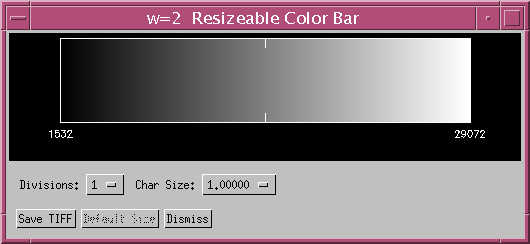
Figure 13. Resizeable Color Bar, shown with greyscale color
table (IDL table number 0)
Color tables are only allowable when only one plane of data (black and white) is displayed. Selecting the color tables option when more than one plane is active will generate a message indicating that the Manage Data option in the image viewer's Utilities menu can be used to move data into and out of the various image planes, and additionally planes can be turned on and off. Through these means a single plane of data can be chosen and color tables and the color bar can then be employed. If the color bar is on-screen and the Manage Data utility is used to display two or three planes resulting in a color display, then the color bar will be killed.
The color bar widget has a few options: 1) it is resizeable by standard window resizing using the cursor and there is a button to resize back to the default size, which is 512 pixels wide by 128 pixels tall, 2) the number of divisions between tick marks can be selected from values of one through ten divisions, 3) the size of the annotation characters is selectable, and 4) the color bar can be saved as a TIFF image file and the color table will be correctly applied in the color TIFF file.
The values printed at each tick mark will usually reflect whether the native data is of an integer or floating data type, although at times certain floating point numbers will be displayed as integers. The data range as shown by the tick values can be made quite small by adjusting the limits on the Stretch DN Interface (histogram) utility. The tick marks on the color bar will automatically update to reflect any changes invoked by the Stretch DN Interface widget's Apply button.
On an eight-bit display device some color flashing may occur as the cursor is moved in and out of various windows. Image viewer and the color bar are both designed to auto-reload the selected color table when the cursor is moved into either the image viewer window or the color bar area of the color bar window. There may be times when the selected color table will not auto-reload correctly when the cursor is moved into the image viewer window on an eight-bit display, but if the image is saved using the viewer's Save Image utility, the color table will be properly applied to the saved image file (likewise for the color bar when it is saved using the Save TIFF button on the color bar widget). The color table will always auto-reload correctly when the cursor is moved into the color bar area of the color bar window.
A limitation of the color bar on an eight-bit display device is that the eight-bit emulation mode must be set to Private Color Maps. The color bar is not available when the emulation mode is set to Common Color Map. The emulation mode is selectable under the Controls menu in the misr_view main console.
3.2.5.2.3 Stretch DN Interface
Every MISR data window has a Stretch DN Interface (Figure 14 and Figure 15) associated with it. This interface can be made visible or hidden through the use of the Show Stretch DN Interface/Hide Stretch DN Interface toggle item under the Utilities menu. The Stretch DN Interface allows the user to alter the appearance of the data displayed within the red, green, and blue channels of a MISR data window. This is done by manipulating the minimum and maximum data values that are used to define the data range to be mapped to a particular data window channel. (In this case, mapping refers to the process of converting or scaling actual data values, often 16 bit or floating point numerical representations, to numbers that range between 0 and 255 inclusive, in order to be able to display a representation of the data on-screen.)

Figure
14. Stretch DN Interface, shown with option "R" selected
The Stretch DN Interface contains controls for manipulating the histogram. This interface can be brought up by selecting this option through the Utilities menu.
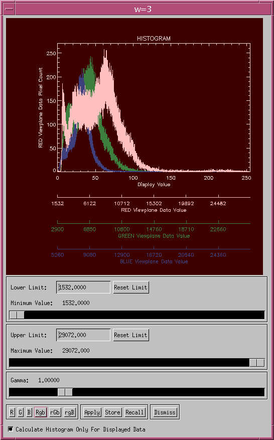
Figure
15. Stretch DN Interface, shown with option "Rgb" selected
This interface provides sliders for setting minimum, maximum and gamma values, and text entry boxes to set the slider limits. The display of the histogram will dynamically reflect the effect of the new values of any of these three sliders as they are repositioned. The relative positions of the Minimum Value and Maximum Value sliders cannot be inverted; that is, the data value of the Minimum Value slider will always be less than or equal to the data value of the Maximum Value slider and there is no provision for inverting the data values in the image display window. The Minimum Value and Maximum Value sliders have associated limit values, where the user may alter that slider's limit which otherwise defaults to the data limits. These limit values alter how low the minimum slider and how high the maximum slider will go, and are useful for applying common stretches across multiple images. The Gamma slider allows the user to apply an exponent to the range of data values to be mapped (1.0 = null gamma). This slider operates on the distribution of values between the minimum and maximum as selected by the Minimum Value and Maximum Value sliders. Changing the Gamma slider allows the user to slide the middle values up or down in a nonlinear fashion, thereby applying an overall brightening or darkening to the image. The general recommendation for using the Gamma slider is to move the main bulge of the histogram into the middle portion of the histogram. Some user experimentation may be required to become familiar with the effect of changing the applied gamma. Since all display devices and viewing environments have their own characteristics and adjustments, the Gamma slider serves in part to optimize viewing within a particular display environment. To redisplay the image with newly selected slider positions, the user must invoke the Apply button, described below, causing the original data range to be re-scaled using the newly selected values. The original data bit-depth is always preserved in memory.
A collection of buttons along the bottom supply various other user controls. The six buttons R, G, B, Rgb, rGb and rgB give control over which colors histogram will be displayed and in which manner, but do not otherwise have any effect on the display of image data. The R, G and B buttons display only that color's histogram, whereas the Rgb, rGb and rgBbuttons display the other two colors histograms underneath, allowing histogram comparison. If there is no data loaded into any particular channel, then controls pertaining to that channel are disabled.
The next group consists of three buttons: Apply, Save and Recall. The Apply button invokes the current min/max/gamma selection and redisplays the image data accordingly. No image display action is taken until the Apply button is invoked. The Save and Recall buttons allow the user to save the stretch parameters in a disk file, and later recall them. The disk file format is a simple ASCII text file with keywords and values, which may be independently edited off-line and later recalled.
The last button in that row, Dismiss, simply closes the Stretch DN Interface. This interface can be brought back by again selecting the option in the Utilities menu.
Lastly, at the very bottom of the interface is a toggle button to select whether the histogram will represent all of the loaded data in that plane, or just the portion that is currently visible in the image display window. When the Apply button is invoked, the new scaling parameters are applied to the entire dataset, regardless of the toggle point of this button, such as the zooming and panning functions allow different portions of the data to be moved into and out of the display window.
3.2.5.2.4 Hide/Show Companion Window
The companion window of the image viewer is generally always present, and will recreate itself if killed. However, it can be made invisible with the Hide Companion Window item in the Utilities menu. Next time the Utilities menu is opened the same item will read Show Companion Window and can be used to make the companion window visible again.
The Transform Data... item under the Utilities menu can be used to modify the values of data within a data window through the application of a mathematical formula that is expressed in IDL. When this menu item is selected, the Transform Data Interface will appear; this interface lists all of the data that are loaded into the data window. Adjacent to the name of each of the data sets is a View/Edit Transform button. When one of these buttons is pressed, the Transformation Information Interface appears (Figure 16).
The Transformation Information Interface allows the user to specify and edit transform files which will modify the values of the source data (information regarding how to create transform files can be found in Appendix F). Existing transform files can be activated by clicking on the Recall Transform... button and selecting a transform file (by convention, transform files have names that end in .transform, but this is not a requirement). Once a transform file is selected, it is parsed, and if it contains valid transform information, its contents are displayed in the Transform Commands and Transformation Information text areas of the Transformation Information Interface. The contents of the Transform Commands text area show how the source data within the current data window will be modified before being displayed. The contents of the Transform Information text area provide information as to the purpose of the transform. Clicking on the Apply button will cause the transform commands within the Transform Commands text area to become attached to the current data window. Any transform attached to a data window can be quickly removed by clicking on the Clear Transform button, followed by clicking on the Apply button. Transform files can also be edited with the transform editor, available by clicking on the Transform Editor button.
The Transform Editor (Figure 17) is essentially a text editor that is designed specifically for editing transform files. When it is invoked, the current transform file within the Transformation Information Interface is opened in the editor; if no transform file is open in the Transformation Information Interface, a transform template is displayed within the editor. The menu bar for the Transform Editor contains standard text editor commands plus some commands that pertain specifically to transform files. Under the File menu, there are five items: Template, Open..., Save, Save As..., and Exit. Most of these items are familiar to users of text editors with the exception of Template, which clears the text editor contents and displays a template transform file from which the user can begin building a specific transform. The Exit item, in addition to dismissing the Transform Editor, also asks the user if the current transform within the Transform Editor should be transferred back into the Transformation Information Interface.
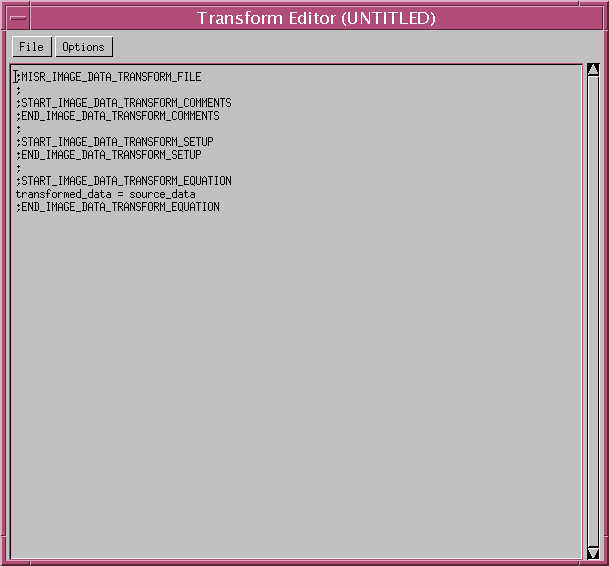
Figure 17. Transform Editor
The Options menu contains only one item, Check Syntax. By selecting this item, the user can test a transform for proper syntax prior to exiting the Transform Editor. If there are any errors within the current transform file, an error message will be displayed which describes the problem encountered. If the transform file is error-free, an informational dialog will be displayed with a message that the current transform appears to have the proper syntax. It is important to remember that, although a transform can be syntactically correct, it may still cause a problem or be invalid for data of a certain number type. Please refer to Appendix F for specifications on writing transform files and potential problems.
Because it is often desired to always transform certain MISR data products, misr_view 4.2 is delivered with an ASCII file named misr_view_DEFAULT_TRANSFORMS which associates the various MISR data products with transform files. Each line of this file is of the form:
local_granule_id_prefix=transform_file
where local_granule_id_prefix is the portion of the MISR local granule ID that is not orbit or path specific and transform_file is the name of a valid transform file (the name should NOT be fully-qualified). If there are no valid transform files for a particular data product, or if no transform files should be used, transform_file can be left blank. Each MISR data product should have only ONE entry within misr_view_DEFAULT_TRANSFORMS; if there are more than one entry, only the first will be recognized by misr_view. The version of misr_view_DEFAULT_TRANSFORMS that is initially delivered with misr_view 4.2 contains the following lines:
MISR_AM1_GP_GMP=
MISR_AM1_GRP_TERRAIN_GM=
MISR_AM1_GRP_ELLIPSOID_GM=
MISR_AM1_GRP_RCCM_GM=
MISR_AM1_AGP=
MISR_AM1_AS=
MISR_AM1_TC=
As can be seen, none of the MISR gridded products are initially associated with transforms, but this file can be edited as necessary to associate other MISR data products with appropriate transforms.
When misr_view is first initiated, the location of misr_view_DEFAULT_TRANSFORMS is set to be the current directory from where misr_view is being run. This default directory can be changed by selecting the Preferences... item under the Controls menu on the misr_view main console (please refer to Section 3.2.2.1.6 for more information). Whenever a new data window is created, misr_view_DEFAULT_TRANSFORMS is opened and misr_view checks to see if the current data to be loaded has an associated transform file. If it does, the transform file is opened and its contents are applied to the source data prior to being displayed.
It is strongly suggested that the user read Appendix F carefully before attempting to create or modify any transform files.
The Manage Data... item under the Utilities menu can be used to manipulate the data to be displayed within the red, green, and blue channels of a MISR data window. When selected, the Data Manager Interface (Figure 18) appears; this interface contains droplists for selecting the data to load into the red Plane, green Plane, blue Plane and any of the ancillary planes of the MISR data window, plus check boxes (Display Red Plane, Display Green Plane, and Display Blue Band) which allow the user to control whether any of the three visible planes should be displayed at all, regardless of whether data is within the plane or not. Utilizing the controls in this interface, the user can "move" data around within a data window, regardless of the initial data/plane setup for the window. Pressing the OK button dismisses the Data Manager Interface, updating the data window to reflect any changes specified; pressing the Cancel button dismisses the Data Manager Interface and restores the data window to its prior configuration.
The image as viewed may be saved to an image file on disk by selecting the Save Image... item under Utilities. The image will be saved either as 24-bit color, or as an 8-bit black and white image if only a single band is being viewed. Also, the current stretch will be applied. An interface (Figure 19) will appear giving the user some options. The user may choose between TIFF, JPEG and VICAR formatted disk files. Also, the user may choose between saving all loaded blocks using the current stretch, or saving only the area currently visible in the window. In either case, the image will be saved at the native spatial resolution as was specified in the MISR Data Selection Interface.
Once the user chooses a file name via the Select... button and then clicks on the SAVE button, an interface will appear asking the user if annotations such as titles and color bars (if applicable) are to be concatenated to the image to be saved. If the user clicks on the Yes button, an interface appears which allows the user to annotate the image to be saved (Figure 19b). If the color bar is present, the user will have the option of concatenating it to the bottom of the image, along with a user-defined title and font size (the color bar option will not appear on this interface if an associated color bar is not onscreen). In addition to the color bar, the user will also have the option to add up to three lines representing a title above the image, referred to in the interface in Figure 19b as the Main Title, Secondary Title, and Tertiary Title. For each title, the user has the options of a user-defined title (the User-Defined option), no title (the None option), or the name of one of the fields that are loaded into the red, green, and blue planes. Initially, all titles are set to be the name of the field loaded into the red plane; if there is no data in the red plane, the default title will be Title 1. If the user selects the User-Defined option, the text box associated with the title will be active and allow the user to enter the desired text string. If the None option is selected, the corresponding title will be ignored (NOTE: if the user does not want a particular title but DOES want the vertical space reserved for the title, he can select the User-Defined option and enter at least one blank space in the corresponding text entry box). As with the color bar text, the size of the text for each title can be set using the associated font size droplist.
There are times when the image is dwarfed by either the title and/or the color bar; this often occurs with low-resolution data. The user can choose to resolve this by resizing the data using the width of the title or the color bar as a rule; the Resize Image To Color Bar Width and Resize Image To Title Width controls can be invoked, with the Image Resize Method control allowing the user to resize either by Nearest Neighbor sampling or by Linear Interpolation.
Once all of the annotations have been properly prepared, the Preview... button can be pressed to view a sample of the image to be saved (Figure 19c). To dismiss the preview window, select Exit from the Actions menu at the top of the window. If the image appears as the user desires, the Save Annotated Image button can be pressed. Alternatively, the Cancel button can be selected if the user wants to opt out of this process entirely.
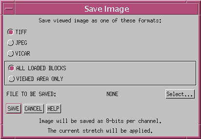
Figure 19. Save Image
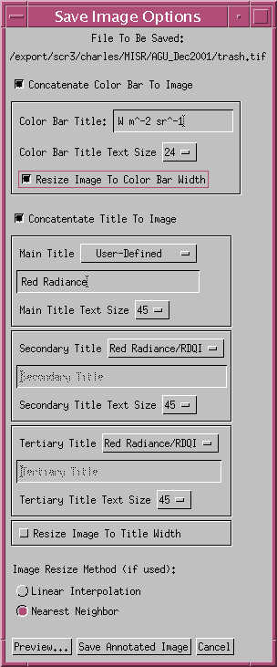
Figure 19b. Save Image Options
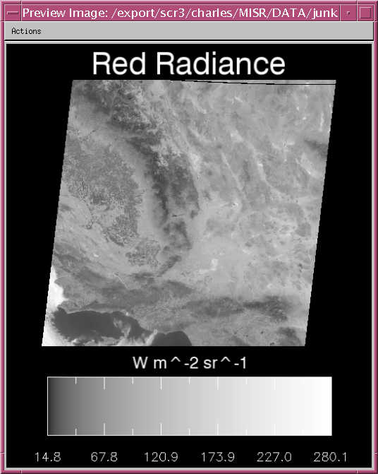
Figure 19c. Save Image Preview With Annotations
Data loaded into the image window planes, or channels, may be saved (Figure 20) as raw science data to a disk file via the Save Data... item under Utilities. The user may select between four different file formats in which to save the data. The options are HDF, NetCDF, simple binary, and VICAR. With VICAR and flat binary files, each plane can only be saved individually to a single dataset. Use the Manage Data interface (Section 3.2.5.2.6) to activate the desired plane and to deactivate all others. After saving one plane to a file, another may be selected and saved. In this manner, all loaded data can be saved to disk. When saving data out to binary files, a text "helper file" will also be created, which provides some basic information about the dataset, such as dimensions, number type, and projection information. With HDF and NetCDF files, all data can be saved as separate entities within the same file, along with projection information. The raw data will be saved at its native bit-depth with no modifications to data values. If more that one MISR block is present, then the data will be mosaicked together as a single image for each plane. Unlike the other formats, with VICAR, no ancillary information will be saved; only the data will be saved to the file.
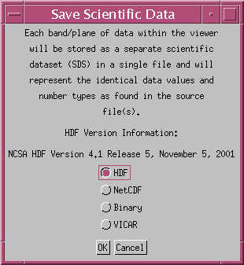
Figure 20. Save Data Options
The Tools menu contains several entries: Perspective Tool..., Band Slider Tool, Scroll Tool, Vector Overlay Tool..., and Reprojection Tool.....
The Perspective... item under the Tools menu is used to spawn the Display Perspective Setup interface (Figure 21) allowing the user to render a perspective view of an image data set (or texture map) "draped over" an elevation data set viewed from some point in 3-D space. Once rendered, the perspective scene can be translated or rotated via the mouse.
Once the Perspective... item is selected, the user may see a message that will appear if misr_view is NOT being run on the local host machine whose display is being used. This message basically says that the perspective interface may not operate correctly if misr_view is not being run on the local host. The interface may become so slow to respond that, eventually, there will be no response from the interface whatsoever. Therefore, unless misr_view is being run on the local host whose display is being used, the perspective interface should not be utilized.
Regardless of whether the message above appears, the next message will always appear, as it alerts the user as to how the incoming data is handled by the perspective interface. There are several limits that the perspective interface imposes on the incoming data, all doing with the size and shape of the data sets. First, incoming data to be used as elevation is restricted to a width and height of 512 data elements; incoming data to be used as a texture map is restricted to a width and height of 1024 data elements. If the corresponding incoming data does not conform to these limitations, it is decimated as necessary to conform to these limitations. Incoming data with dimensions less than these restrictions will be left untouched.
Next, the perspective viewer can only accept "square-sized" data sets as input. If incoming data does not have equal width and height dimensions, the smaller dimension is padded so as to create a square image.
To illustrate the above processes, assume incoming texture map data dimensions of 2048 data elements wide by 4096 data elements high. Assume the same incoming dimensions for the data set to be used as elevation. First, both data sets would be decimated (retaining their dimensional aspect ratios), resulting in a texture map data set with dimensions 512 data elements wide by 1024 data elements high, and an elevation image with dimensions 256 data elements wide by 512 data elements high. Both decimated data sets would then be padded accordingly so that their final dimensions would be 1024 by 1024 and 512 by 512, respectively.
Once all warning messages have been dismissed, the user will be presented with the Display Perspective Setup interface. This interface allows the user to specify which of the data sets loaded into the data window should be used as elevation. A droplist in the center of the interface, when clicked upon, will reveal all of the data within the data window that can be selected for use as elevation. Although elevation data is usually some form of a digital elevation model, there is no restriction as to what type of data is specified as the elevation data set. Note that all data currently displayed in the red, green, and blue planes will be used as the texture map.
With the Display Perspective Setup interface, the user also has control as to the extent of the data to be used in the perspective viewer via the Use Entire Data Extent and Use Displayed Data Extent radio buttons. Depending on which radio button is active, either all or a portion of the data stored within a data window can be specified for use with the perspective viewer.
Pressing the OK button on the Display Perspective Setup interface invokes the perspective viewer; the Cancel button ends the current process and returns the user back to misr_view.
The Interactive Perspective Viewer interface (Figure 22) is primarily a view display with a short menu in the upper left corner. When the viewer is first displayed, it renders a scene in the view display using the input texture map and elevation data; once this scene is rendered, the user can control the rotation and translation of the scene by depressing and dragging either the left or right mouse buttons within the display window, respectively. While translation or rotation is occurring, the displayed scene switches to a mesh representation, for the purposes of conserving computing time. Once the mouse is released, however, the scene is re-rendered using the new translation or rotation parameters.
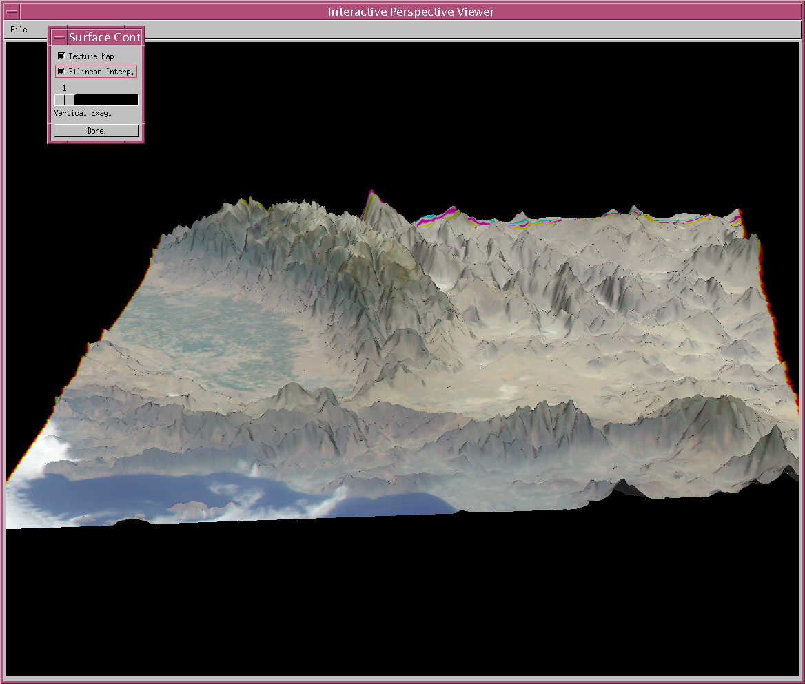
Figure
22. Interactive Perspective Viewer and Surface Controls
The menu bar in the upper left corner of the perspective interface only contains the menu named File. Under this menu, there are two items, Surface Controls and Quit. Quit simply destroys the perspective interface and returns the user to misr_view. Surface Controls, however, displays the SurfaceControls interface (Figure 22) that allows the user to specify whether the texture map should be drawn (the Texture Map check box), whether bilinear interpolation should be used (the Bilinear Interp. check box), and what degree of exaggeration should be applied to the elevation data (the Vertical Exag. slider). The Done button dismisses the Surface Controls interface.
The Spawn Band Slider item under the Tools menu is used to invoke the Band Slider Tool interface and its accompanying Slider Controls interface (Figure 23). When at least two data sets are loaded into a data window, the band slider tool can be used to move or "slide" individual bands of data with respect to all other displayed bands. This can be useful, especially when attempting to align two images that comprise an anaglyph.
Most manipulations of the bands displayed in the band slider display window are accomplished through the controls on the Slider Controls interface. The red, green, and blue check boxes located in the upper left corner of the Slider Controls interface allow the user to specify one, two, or three active bands to be manipulated whenever band displacement is to occur. The adjacent horizontal, vertical, or free radio buttons allow for restriction of any movement of bands to a single direction or allow full range of movement. The Horizontal increment and Vertical increment text boxes below the check boxes and radio buttons enable the movement in either the horizontal or vertical direction to be variably-incremented.
To initiate band movement, the user can either click upon one of the nine arrows on the Slider Controls interface, or depress the mouse within the band display window and drag the active band or bands in the direction of the desired displacement. Clicking on one of the arrows will result in a displacement based upon the specified vertical and horizontal increment values; these increment values are not used when dragging bands within the band display window itself.
Below the arrows on the Slider Controls interface are DX and DY labels for the red, green, and blue bands. These labels show the displacement of each band based upon their initial orientation. A red DX value of -1, for example, would indicate that the data in the red band has been displaced horizontally by one data value.
The three buttons at the bottom of the Slider Controls interface are Reset Planes, Save As TIFF, and Dismiss. The Reset Planes button updates the band slider display window so that it displays the data loaded into the bands in their original orientation without any displacement. The Save As TIFF button simply saves the current display within the band slider window as a TIFF file; upon clicking on this button, a dialog box will appear, requesting that the user enter the name of the file to be saved. The final button, Dismiss, destroys both band slider interfaces.
The Spawn Scroll Tool item under the Tools menu is used to invoke the Scroll Window and its accompanying Scroll Controls interface (Figure 24). This tool allows the user to automatically "scroll" through data from a series of MISR blocks which has been loaded into a MISR data window. Orientation of the scroll movement is restricted to the path created by connecting the center points of each of the loaded blocks.
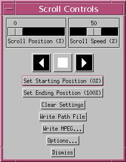
Figure 24. Scroll Controls
Once the data has been loaded into the scroll tool, the user can use the controls in the Scroll Controls interface to manipulate the scrolling characteristics of the data within the Scroll Window. The two sliders at the top of the Scroll Controls interface (Scroll Position (%) and Scroll Speed (%)) allow the user to interactively manipulate the location and scroll rate within the Scroll Window (the Scroll Position (%) slider is only sensitive when scrolling is not actively occurring). The numbers attached to each of these sliders are relative percentages of scroll position and speed, respectively; the percentages inform the user as to each individual slider's position within its entire range of positions.
Below the sliders are three VCR-like buttons for controlling scroll direction. From left to right, these buttons allow the user to "reverse-scroll", "stop", and "forward-scroll" the contents of the Scroll Window.
Below the three VCR-like buttons are the Set Starting Position (%), Set Ending Position (%), and Clear Settings buttons. These buttons allow the user to limit the active scrolling area within the Scroll Window. To define an active scroll area, the user can use the Scroll Position (%) slider to define either a starting or ending position within the scroll path. Once this position is located, either the Set Starting Position (%) or the Set Ending Position (%) button can be pressed to define a scroll end point. The percentage label on the button pressed will be updated to reflect the new starting or ending scroll point. Press the Clear Settings buttons to reset the starting and ending scroll positions to 0% and 100%, respectively.
Below the Clear Settings button is the Write Path File button. This button allows the user to create a "path file" which contains information regarding the timing and position of the current scroll. A TIFF image of the area scrolled will also be generated. The information within the path file and the TIFF image can then be used in conjunction with other software packages to create smooth, high-quality animations of the current scroll.
When the Write Path File button is pressed, two dialog boxes will appear in succession; the first allows the user to enter the name of the path file to be generated. The second allows the user to enter the name of the TIFF image that will contain the data within the scroll area. Once these two dialog boxes have been dismissed, a Confirm Settings interface will appear. This interface displays the selected path file name and TIFF file name, the total number of seconds for the entire scroll to occur, and the total number of blocks within the scroll. Additionally, there are two buttons (HDTV (1920x1080) and NTSC (720x486)) which can be toggled to select the display type that is to be considered when generating frames for the high-quality animation.
Below the Write Path File button is the Write MPEG... button. This button allows the user to save the current scroll as an MPEG file. When pressed, the MPEG Generation interface will appear (Figure 25), allowing the user to review starting and ending scroll points (Starting Frame (%) and Ending Frame (%) labels), change the direction of the scroll (Forward and Reverse toggle buttons), and specify the name of the MPEG file to be created (Specify Filename button). Once the user is satisfied with the settings, the Create MPEG button can be pressed to create the MPEG file of the scroll.
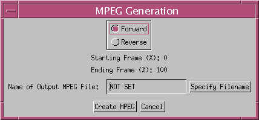
Figure 25. Scroll Tool MPEG Generation Interface
The Vector Overlay Tool... item under the Tools menu allows the user to overlay velocity vectors over scaled image data that is displayed within a data window's currently-active RGB planes (the image data is scaled based upon the associated histogram settings; please refer to Section 3.2.5.2.3 for information on the Stretch DN Interface). When this item is selected, the Velocity Vector Setup interface appears (Figure 26); this interface contains droplist controls for specifying the velocity vector U and V components and for controlling the appearance of the vectors that are drawn. The X-Component (U): and Y-Component (V): droplists contain descriptions for all for all of the data that is loaded into the current data window. Whatever data the user selects for the U and V components must adhere to the following rules:
- U and V vector data
must be equal in dimensionality and in the number of elements per dimension
- U and V vector data
must have equal or fewer elements than the underlying imagery (per band)
- U and V vector data
must have dimensions which are integrally-related to the analogous dimensions
of the underlying imagery
If any of these criteria are not met, misr_view will display an error message. Also, if the number of elements per U and V component is equal to the number of elements per band in the image over which the vectors will be displayed, a warning message will appear, informing the user of this situation. This warning appears primarily because the velocity vector information available in the MISR standard product files is of low resolution (70.4km) compared to other parameters such as radiance data (275m to 1100 m); misr_view assumes that the image data over which the vectors will be drawn will have significantly higher resolution and therefore many more elements compared to the U and V data. The user can continue the vector overlay process even if this warning appears by clicking on the Yes button on the warning interface.
The Color To Draw Vectors: and Relative Vector Line Length: droplists allow the user to tailor the appearance of the vectors to be drawn. Each droplist has several choices available and there usually is a combination of these droplist selections that will produce reasonable results. NOTE: The Vector Line Thickness: droplist control is permanently disabled and will be removed in future versions of misr_view.
If the user wants to perform the vector overlay procedure within a map projection supported by IDL, the Reproject Image Data check box can be selected; this selection will cause the Data Reprojection Interface to be displayed when the OK button is pressed. This interface is described fully in Section 3.2.5.3.5 and allows the user to specify IDL-supported projections and their various parameters such as projection center and resolution. Once the desired map projection parameters are selected, the Do Reprojection button on the Data Reprojection Interface can be pressed to initiate the reprojection process.
Pressing the OK button on the Velocity Vector Setup interface without the reprojection option or, alternatively, pressing the Do Reprojection button on the Data Reprojection Interface will eventually cause the Velocity Vector Overlay Result interface to appear. This interface displays the result of the velocity vector overlay process (Figure 27) within a scrollable window; this window is not resizeable, as its main function is to allow the user to see the results of the vector overlay process. If the user decides that the overlay image is worth saving, the Save As TIFF... button on this interface can be pressed, and the usual file save dialog box will appear, allowing the user to enter a file name. The Dismiss button simply destroys the Velocity Vector Overlay Result interface.
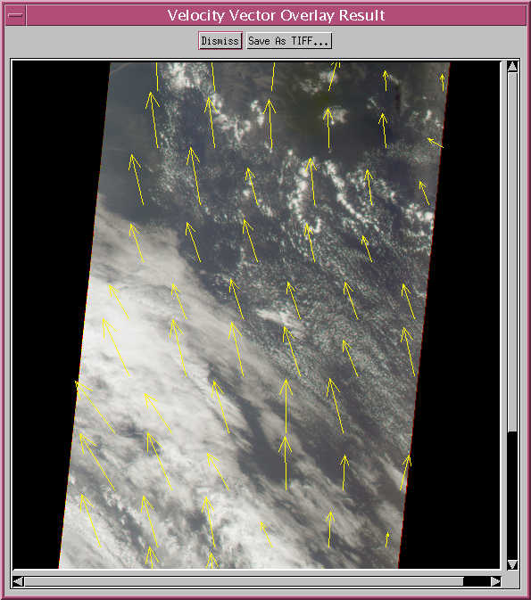
Figure 27. Velocity Vector Overlay Result
The Reprojection Tool... item under the Tools menu allows the user to reproject data within a data window into any of the projections supported by IDL (for more information on supported map projections, please consult the IDL documentation). It is important to note that this tool will reproject ALL data associated with the current data window and all data windows linked to the current data window (see Section 3.2.5.2.1 for more information on linking). Also, all reprojected data is NOT scaled, but rather retains its original number type and bit-depth. Because of the large number of options that are available to the user when reprojecting data, the Data Reprojection Interface contains five primary sub-interfaces that are controlled with the PROJECTION PARAMETERS: droplist at the top of the main interface (Figure 28). Each one of the sub-interfaces contains controls in regards to one aspect of the projection process: PROJECTION CENTER, PROJECTION EXTENT, PROJECTION TYPE, PROJECTION WINDOW, and OTHER SETTINGS. All of the parameters that are within these interfaces are described more fully below and in Appendix E. Also, there are several ? buttons on the Reprojection Tool... interfaces which, when pressed, provide some brief projection parameter information.
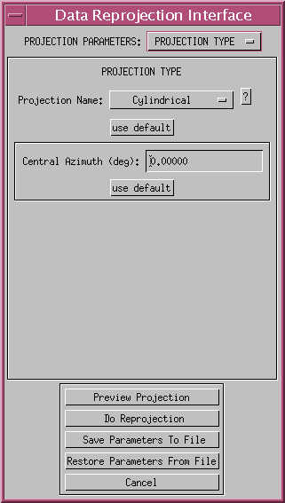
Figure 28. Data Reprojection Interface
The PROJECTION CENTER interface (Figure 29) provides entries for specifying the center latitude, center longitude, and center rotation of the desired projection (Center Latitude (deg):, Center Longitude (deg):, and Rotation (deg):). The use defaults button will reset these values to 0.0, 0.0, and 0.0, respectively.
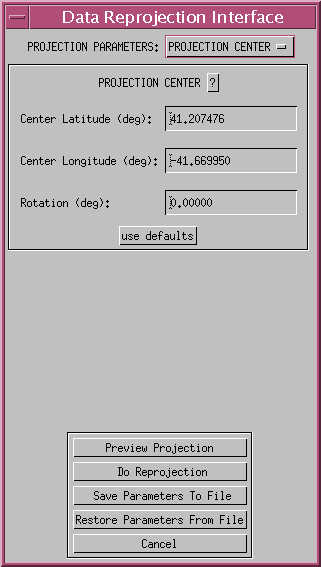
Figure 29. Projection Center Interface
The PROJECTION EXTENT interface (Figure 30) allows the limits of the desired projection to be specified in one of two ways, scale or limits. If the Specify Extents By: radio button control is set to Scale, the user can specify projection limits by entering a desired map scale (the Scale = 1: control). The use default button will reset the scale value to 1,000,000.
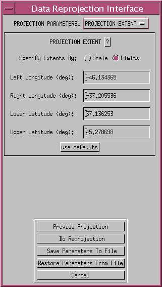
Figure 30. Projection Extent Interface
If the Specify Extents By: radio button control is set to Limits, the user can enter the longitudinal and latitudinal extent of the projection into the Left Longitude (deg):, Right Longitude (deg):, Lower Latitude (deg):, and Upper Latitude (deg): controls. The use defaults button will reset the longitudinal and latitudinal extents to the actual extents of the input data.
The PROJECTION TYPE interface (Figure 28) allows the user to specify one of 18 different projection supported by IDL by manipulating the Projection Name: droplist. Depending on the projection chosen, there may be additional parameter controls that appear on this interface. For example, if the cylindrical projection is chosen, the Central Azimuth (deg): entry will appear, allowing the user to change the central azimuth to a value other than 0.0 (the default value). Appendix E lists all of the supported projections and their associated parameters and default values. The default projection is cylindrical.
The PROJECTION WINDOW interface (Figure 31) allows the user to specify the dimensions of the projection window in one of two ways, explicitly setting the window width and height, or by specifying a resolution. If the Specify By: Width/Height radio button is selected, the user can enter the desired size of the projection window into the Window Width: and Window Height: controls (the default window size is 500 pixels square). The Specify By: Resolution radio button allows misr_view to automatically calculate the projection window dimensions based upon a resolution entered into the Output Resolution (km): control (the default resolution is determined from the input data and is a rough estimate of the input resolution). If misr_view determines that the size of the projection window is too large based upon the resolution and projection extent, an error message will be displayed.

Figure 31. Projection Window Interface
The OTHER SETTINGS interface (Figure 32) contains controls for resolving other miscellaneous aspects of the reprojection process. If the reprojection is occurring with several linked windows, the Resolve Multiple Image Overlap By Using: droplist allows the user to specify how to resolve any pixels in the projection window that are covered by pixels from more than one image: first value encountered, last value encountered, highest DN value, lowest DN value, and average.
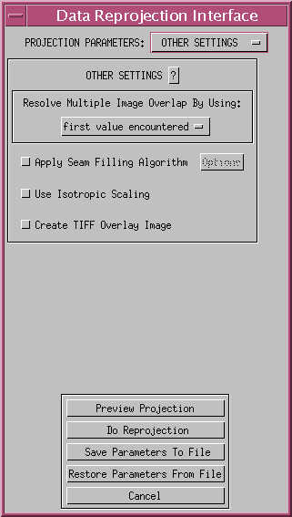
Figure 32. Projection Other Settings Interface
The Apply Seam Filling Algorithm check box and associated Options... button allow the user to "fill" seams between images in the projection window through the use of a box averaging algorithm. If the box averaging algorithm is applied to the projection window, all pixels in the projection window that are considered "bad" or "missing" are referenced. For each of these values, a check is made of the adjacent pixels to see if there are any "good" pixels in the vicinity. If there are a certain percentage of good pixels, they are averaged, and this average value is used to replace the missing pixel. The Box Filter Parameters interface, which appears by pressing the Options... button, contains controls for specifying box width in pixels (Width Of Averaging Box (3->7):) and a percentage of good pixels that must be present (Required Percentage Of Good Pixels Within Averaging Box (0.0->100.0):) for averaging to occur (the default values are 5 and 25.0, respectively).
The Use Isotropic Scaling check box forces the projection window to have the same scale in both the latitudinal and longitudinal directions.
The Create TIFF Overlay Image check box allows the user to save an overlay image than can be applied and combined with the projected data image to produce an output image with some basic geographic annotation (the process of combining the two images is outside the scope of misr_view; other software packages exist, however, which allow images to be interpreted as layers of a single image). The overlay image has the same dimensions and projection parameters applied to it as the data reprojection window, but it only displays continental outlines and longitudinal and latitudinal grid lines.
Once the user has specified all of the projection parameters, there are five ways in which the user can proceed by pressing one of the buttons at the bottom of the main interface (Figure 28): Preview Projection, Do Reprojection, Save Parameters To File, Restore Parameters From File, and Cancel.
The Preview Projection button allows the user to perform a quick check of the selected projection parameters in order to see the projection space in which the data will be transformed into. The Projection Preview Window (Figure 33) appears for several seconds and only displays continental outlines and latitudinal and longitudinal grid lines; nevertheless, it provides the user with "hints" as to whether the specified projection parameters will result in the desired output. For example, if the preview window displays only a black window without any continental outlines, longitudes, or latitudes, it may signify a problem with one or more parameters.
The Do Reprojection button initiates the reprojection process. An intermediate interface will appear that summarizes all of the projection parameters and which has Continue and Respecify buttons. This is the last chance a user will have to revise any mistakes before the reprojection process actually begins. If the Continue button is pressed, a Reprojecting Data... progress bar will appear notifying the user of the percentage of processing complete. Once finished, the reprojected data will be displayed within a new data window. This new window will have an additional menu item in its menu bar (Section 3.2.5), Projection Info which, when pressed, will display a projection information window listing all of the projection parameters that were used in reprojecting the data within the window.
The Save Parameters To File button and Restore Parameters From File button allow the user to save and recall projection parameters to and from an ASCII projection parameter file. These files can be edited by hand, but it is not recommended; it is best to create these files through the use of the reprojection interface controls.
In the case of pressing the Preview Projection button, the Do Reprojection button, or the Save Parameters To File button, the user may encounter a Reprojection Parameter Problems interface, which details projection parameter errors and possible problems. If there are errors, the user will be forced to revise his parameter selections. If there are only potential problems listed, the user can continue the reprojection process by pressing the Continue button. However, it is recommended that the user review his projection parameters anytime the Reprojection Parameter Problems interface is encountered.
The items underneath the Modes menu allow the user to manipulate the data display area using one of the three mouse buttons. These modes include Zoom are Pan are selectable by highlighting the item of choice with the left mouse button. The current active mode will be marked with a right-caret (">") in the Modes menu.
The Zoom mode allows the user to single-click within the data window display area to zoom in or out by a factor of 2. Under this mode, the buttons on the mouse have the following functionality when clicked each time within the display region of a data window:
LEFT MOUSE BUTTON
= ZOOM OUT
CENTER MOUSE BUTTON
= ZOOM IN
CAUTION: Care should be taken to click judiciously when in Zoom mode because each click is a zoom command and will take time to execute.
Zooming is always centered on the point within the display area that was clicked upon and, if the displayed data fills only a portion of the display area, the lower left corner of the displayed dataset will always be anchored to the lower left corner of the display area. Zoom mode is the default mode.
The Pan mode allows the user to re-position data displayed in the data window when only a portion of the data is visible (the user may have zoomed in on the display window, for example). In this mode, depressing the left mouse button within the display window will cause the display area to become moveable. Dragging the mouse while keeping the left mouse button depressed will move the initially visible portion of the data in the direction of the mouse drag; this is a visual cue to the user to show the current area of the data that will be displayed with respect to the previous displayed data region. Once the user releases the mouse, the contents of the data window will be re-drawn to reflect the newly panned area.
The Kill button destroys the data window and all of its contents. Any associated companion windows or stretch DN windows or any other windows that are directly part of the data window will also be killed. The data window that is being killed will also be un-linked from any other data windows that it may be linked to.
The location window is available through the main console's Controls menu item, the Show Location Map/Hide Location Map toggle. The purpose of this window is to display an image of the world in order to help the user determine the geographical location of data displayed in a data window. Its operation is essentially the same as with a data window, and it can be linked to any data window at any time. After linking the location window to a data window, when the cursor is in the data window the corresponding georeferenced location in the location window will be evident. Linking is only possible with geolocated data and a catalog must be employed to load both MISR product and MISR AGP geolocation files. See Section 3.1.1.1 and Appendix D for catalog information. (AirMISR files are geolocated by default.)
This functionality is described in Section 3.2.5.1 (companion window).
When misr_view detects that an 8-bit color device is being used, the misr_view main console Controls menu button in will contain an additional item: 8-Bit Color Options. With the 8-Bit Color Options item, the user can select one of two ways to handle the various misr_view windows, and to disperse the limited number of colors available to 8-bit color devices. The number of colors available on an 8-bit color device will be less than or equal to 256, usually less than 256 and in some cases substantially less than 256.
misr_view operates in two distinct modes that depend on the color depth of the device that is being used. On systems that support 24-bit color, there will be sufficient color depth to handle color images as 3 separate color planes. However, color devices that support only 8-bit color will be automatically detected by misr_view and will be handled in an emulation mode, which itself operates in two distinct modes: shared (or common) color maps, and private color maps.
Clicking on the 8-Bit Color Options menu item will reveal two sub-items, Common Color Map and Private Color Maps, with the current mode marked by a caret (">"). In the common color map mode, ALL graphics windows within the misr_view application share a SINGLE color map; all colors are matched as closely as possible to the colors that are available in the active color table. This mode is the default mode for misr_view, and is preferred if the user wants to compare two images within two separate windows. Since separate color maps do not have to be saved and loaded for each window, the flashing problem associated with private color maps is eliminated (see the description of private color maps below).
When more than 1 image window is on screen and Common Color Map is selected, the user is presented with a dialog box (Figure 34)Common Color Map and choosing a different source image window in the dialog box.
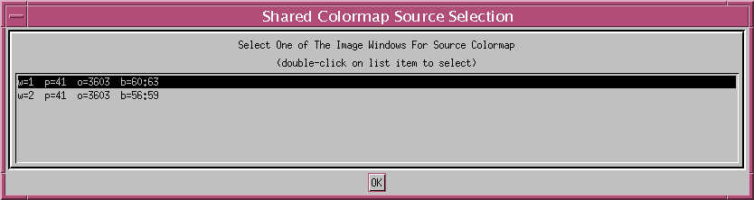
Figure 34. Common (Shared) Colormap Source Selection Interface
With the private color map mode activated, each graphics window stores its own color map that is activated whenever the window is made the current window. The process of activating a graphics window, and therefore loading a different color table, causes a flashing effect, which manifests itself in scrambling the graphic contents of all but the current window. This mode works well if the user is interested in obtaining the best-looking image in any one window and is not interested in making comparisons between separate graphics windows. Figure 35 and Figure 36 show examples of two image windows in common and private color map modes.
The title bar of each image data window (Figure 12, Figure 35, and Figure 36) contains information regarding the window, data and mode. The information coding is:
w = unique window
id
p = MISR
path number (not shown with AirMISR data)
o = MISR
orbit number (not shown with AirMISR data)
b = MISR
blocks (range) (not shown with AirMISR data)
z
= current zoom factor
m = current
mode (zoom, pan)
JPL: Jet Propulsion Laboratory.
NASA: National Aeronautics and Space Administration.
HDF: Hierarchical Data Format
EOS: Earth Observing System
IDL: Interactive Data Language
RSI: Research Systems, Incorporated
MISR: Multi-angle Imaging SpectroRadiometer
AGP: Ancillary Geographic
Product
Appendix
B
Software Version
History
| Software | Module | Release Date | Version Number |
| misr_view | July | 1998 | 1.0 |
| misr_view | October | 1998 | 2.0 |
| misr_view | July | 1999 | 2.3 |
| misr_view | January | 2000 | 3.0 |
| misr_view | September | 2000 | 3.3 |
| misr_view | April | 2001 | 4.0 |
| misr_view | January | 2002 | 4.1 |
| misr_view | November | 2002 | 4.2 |
| misr_view | July | 2004 | 4.4 |
| misr_view | September | 2004 | 5.0 |
| misr_view | September | 2005 | 5.2 |
| misr_view | May | 2006 | 5.3 |
Appendix
C
Listing of Required
Files for Using misr_view Software
misr_view can be run from either its source code files or from an IDL save file that contains all of the pre-compiled routines (see Section 2 for specific information on how to start up misr_view). Regardless of how misr_view is initiated, there are two IDL save files which are required. Categorized listings of all required files for both startup methods are below.
Required Files To Initiate misr_view (BOTH START-UP METHODS)
ancillary_variables.sav
idl_save_version.sav
Required Files To Initiate misr_view (SOURCE CODE STARTUP METHOD)
GetCorrectFont.pro
GetDirectoryDivider.pro
GetLowerBaseContents_color_menus.pro
IMAGE_DATA_R2.pro
MISR_IMAGE_DATA.pro
ReturnListSelectionIdx.pro
add_dim_info.pro
band_slider.pro
blankFileName.pro
blockchooser_after_realize.pro
blockchooser_before_realize.pro
box_filter_float.pro
build_data_menu.pro
colorbar.pro
compile_all
convert_number.pro
convert_pseudocolor2truecolor.pro
create_color_bar_setup.pro
create_projected_image_data.pro
create_slice_stack.pro
cw_proj_info.pro
data_selections_read.pro
data_selections_write.pro
depointer.pro
dialog_pickfile_wrapper.pro
display_misr_view_logo.pro
do_reprojection.pro
do_velocity_vectors.pro
etop05_to_25.pro
filebreak.pro
fill_data_button.pro
gamma_colorbar.pro
get_fill_values.pro
get_local_granule_id.pro
get_mosaic_corner_info.pro
gethost.pro
getwrd.pro
interactive_perspective_viewer.pro
is_valid_number.pro
julianday.pro
lon2path.pro
misr_data_file_finder.pro
misr_data_menu_object.pro
misr_data_selection.pro
misr_display_meta.pro
misr_get_default_transform_file.pro
misr_get_initial_orbit_path_date_info.pro
misr_get_meta_info.pro
misr_get_transform_info.pro
misr_readHDFEOSgrid.pro
misr_return_block_info.pro
misr_return_fill_values.pro
misr_velovect.pro
MISR_GEOREF_IMAGE.PRO
month_int2str.pro
month_str2intstr.pro
most_recent_orbit.pro
orbit2juliandate.pro
orbit2path.pro
parseCatalog.pro
path2most_recent_orbit.pro
read_vicar.pro
reprojection_tool.pro
retrieve_airmisr_latlon_info.pro
retrieve_airmisr_lonlat_grids.pro
return_resolution_info.pro
rotator_90inc.pro
scroll_tool.pro
slide_image2.pro
systime2datetime.pro
unix_locatefile.pro
utm2ll.pro
valid_airmisr_file.pro
vicgetpar.pro
vicsetpar.pro
where2.pro
where_is.pro
where_not.pro
write_vicar.pro
GEOREF_IMAGE_TABLE.PRO
GEOREF_IMAGE.PRO
misr_view.pro
Required Files To Initiate misr_view (PRE-COMPILED ROUTINES STARTUP METHOD)
misr_view.sav
Appendix
D
misr_view Catalog
Files
misr_view catalog files are ASCII files contain the FULLY-QUALIFIED names of files that represent MISR HDF-EOS grid products that are to be available to misr_view (e.g., Ancillary Geographic Product (AGP), Georectified Radiance Product (GRP), Geometric Parameters Product (GP), etc.). Each line of the catalog file contains ONE product entry. Comment lines may be embedded in the catalog file as long as the first non-white character of the comment line is a semi-colon. No end-of-line comments are allowed (combining a catalog entry with a comment on a single line). An example of the contents of a misr_view catalog is listed below:
Note: Each file name and its directory path must be on the same line of text in the catalog file; their appearance here may be split onto two lines due to word wrap.
CATALOG FILE
EXAMPLE
; this is an example
of a comment line within a misr_view catalog file; the first non-white
character must
; be a semi-colon.
;
/data/bank/asdc/GRP_TERRAIN/database/path173/AA/
MISR_AM1_GRP_TERRAIN_GM_P173_O003786_AA_02.hdf
/data/bank/asdc/GRP_TERRAIN/database/path173/AF/
MISR_AM1_GRP_TERRAIN_GM_P173_O003786_AF_02.hdf
/data/bank/asdc/GRP_TERRAIN/database/path173/AN/
MISR_AM1_GRP_TERRAIN_GM_P173_O003786_AN_02.hdf
/data/bank/asdc/GRP_TERRAIN/database/path173/BA/
MISR_AM1_GRP_TERRAIN_GM_P173_O003786_BA_02.hdf
; a comment with some white space preceding the semi-colon
/data/bank/asdc/GRP_TERRAIN/database/path173/BF/
MISR_AM1_GRP_TERRAIN_GM_P173_O003786_BF_02.hdf
/data/bank/asdc/GRP_TERRAIN/database/path173/CA/
MISR_AM1_GRP_TERRAIN_GM_P173_O003786_CA_02.hdf
/data/bank/asdc/GRP_TERRAIN/database/path173/CF/
MISR_AM1_GRP_TERRAIN_GM_P173_O003786_CF_02.hdf
/data/bank/asdc/GRP_TERRAIN/database/path173/DA/
MISR_AM1_GRP_TERRAIN_GM_P173_O003786_DA_02.hdf
/data/bank/asdc/GRP_TERRAIN/database/path173/DF/
MISR_AM1_GRP_TERRAIN_GM_P173_O003786_DF_02.hdf
/data/bank/anc/AGP/database/path173/MISR_AM1_AGP_P173_F01_24.hdf
; end of this catalog
file
Appendix
E
misr_view Map Projection
Information
misr_view supports all of the map projections that are listed below. Some projections require different sets of additional parameters, and those are listed below as well, along with valid ranges of values. For detailed information on a specific projection , please consult the IDL documentation.
ADDITIONAL PARAMETERS
Standard Parallels (-90.0
through 90.0 degrees)
Ellipsoid Model (Clarke
1866)
Central Azimuth (-180.0
through 180.0 degrees)
Distance From Perspective
Point To Center Of Globe (F) (1.0 through 50.0 radii)
Downward Tilt Of Camera
From New Horizontal (Omega)(0.0 through 90.0 degrees)
Rotation Of Projection
Plane (Gamma) (-180.0 through 180.0 degrees)
PROJECTIONADDITIONAL
PARAMETERS
Aitoff
None
Albers Standard Parallels
Azimuthal None
Conic Ellipsoid Model, Standard Parallels
Cylindrical Central Azimuth
Goodes Homolosine None
Gnomic None
Hammer None
Lambert None
Mercator Central Azimuth
Miller Central Azimuth
Mollweide Central Azimuth
Orthographic None
Robinson None
Satellite F, Omega, Gamma
Sinusoidal Central Azimuth
Stereographic None
Transverse Mercator Ellipsoid Model
Appendix
F
Creating and Editing
misr_view Transform Files
misr_view transform files allow the user to modify the values of any data that misr_view extracts from MISR products. Transform files are particularly useful for extracting metadata for the purposes of applying scale and offset information to source data. misr_view provides a function for easily extracting grid attribute information, GetGridAttribute, and an example of how to use this function will be provided below. Also, misr_view is delivered with two transform files, radiance.transform and l2as_scale_min_max.transform, and it is suggested that the user look at the text of these transform files to become acquainted with the format.
(i) Rules
The basic rules to writing transform files are as follows:
- all transform equations
must be written using IDL
- there must be only
one IDL statement per line
- all comments in
the transform file must be preceded by a semi-colon (;)
- all data coming
into the transform must be referred to using the variable source_data
- all data coming
out of the transform must be referred to using the variable transformed_data
- the transform equations
CANNOT change the dimensionality of the source data
- all transform files
MUST have a section delimited by the ;START_IMAGE_DATA_TRANSFORM_EQUATION
and ;END_IMAGE_DATA_TRANSFORM_EQUATION keywords
- all MISR transform
files must have the string ;MISR_IMAGE_DATA_TRANSFORM_FILE as the
first line in the file to serve as an identifier
(ii) Recommendations
In addition to the rules listed above, the following recommendations are also suggested:
- transform file creation
and editing should occur within the Transform Editor
- all transform files
should have a section be delimited by the ;START_IMAGE_DATA_TRANSFORM_COMMENTS
and ;END_IMAGE_DATA_TRANSFORM_COMMENTS keywords
- all transform files
that are created by the user should have their syntax checked prior to
application through the use of the Transform Editor's Check Syntax
option
- the user should
be somewhat familiar with writing IDL code
(iii) Template
The basic form of a transform file is below:
;MISR_IMAGE_DATA_TRANSFORM_FILE
;
;START_IMAGE_DATA_TRANSFORM_COMMENTS
;END_IMAGE_DATA_TRANSFORM_COMMENTS
;
;START_IMAGE_DATA_TRANSFORM_SETUP
;END_IMAGE_DATA_TRANSFORM_SETUP
;
;START_IMAGE_DATA_TRANSFORM_EQUATION
transformed_data
= source_data
;END_IMAGE_DATA_TRANSFORM_EQUATION
This is the template that the Transform Editor provides with the Template option, and is an example of valid transform file contents (although no real transformation occurs, as can be seen by the equation).
(iv) Transform Comments
Comments that are within a transform file fall into one of two categories: internal and external comments. External comments are those that are seen within the Transformation Information Interface within the Transformation Information text area. These comments must lie between the ;START_IMAGE_DATA_TRANSFORM_COMMENTS and ;END_IMAGE_DATA_TRANSFORM_COMMENTS keywords within the transform file. All other comments in the file are considered internal comments and are not visible in the Transformation Information Interface. Any transform comment section of a transform file is optional. All comment lines must begin with a semi-colon (;)!
(v) Transform Equations
All equations (IDL commands) within a transform file must lie between the ;START_IMAGE_DATA_TRANSFORM_EQUATION and ;END_IMAGE_DATA_TRANSFORM_EQUATION keywords. The transform equation portion of a transform file is mandatory.
(vi) Transform Setup
The transform setup portion of a transform file is optional and is only necessary when some value within a transform equation is unknown until the nature of the source data is specified. The transform setup is most useful for extracting and applying metadata to source data. With the transform setup, values needed for the transform equation are obtained either from the user, from a data file, or from some other form of input. Once these values are gathered, they are substituted into the transform equation. This allows for some dynamic flexibility when creating transform files, as one file can potentially be used for several different types of data. Also, once the substitution is made, the transform equation is an independent entity and does not need to rely on any input to perform the transformation. Each line in the transform setup portion of the transform file has the following form:
variable_name = value
where:
variable_name
is the name of a variable to be used in the transform equation
value is the
value assigned to variable_name; this can be hard-coded or it can
be more dynamic, such as a call to a user-supplied function:
variable_name = get_variable_value()
Once the value of a variable has been determined, that value is substituted in the transform equation wherever the variable name is referenced between the << and >> delimiters:
transformed_data = source_data * <<variable_name>>
The equation with the substitutions can be seen in the Transformation Information Interface within the Transform Commands text area.
IMPORTANT NOTE: the transform setup capability only works with scalar variables, not arrays!
(vii) GetGridAttribute
Since many of the MISR data products have various types of metadata associated with them, a helper function, GetGridAttribute, is supplied with misr_view so that the user can easily extract attributes related to a particular data product. The syntax of a call to GetGridAttribute is as follows:
returned_value = SELF->GetGridAttribute( metadata_name, default_value, /SILENT, /MENU )
where:
returned_value
is the actual value of the metadata requested
metadata_name
is the actual name of the metadata to be extracted
default_value
is the value to be returned if the specified metadata_name cannot be located
SILENT is a
keyword that suppresses error messages
MENU is a keyword
that allows the user to interactively select a grid attribute from a list
of all attributes associated with the current data set
If the MENU keyword is specified, metadata_name serves as a label to be used in the interface that appears when the MENU keyword is specified:
my_variable = SELF->GetGridAttribute('scale metadata',1.0,/MENU)
would cause the resulting interface allowing selection of a grid attribute to have the label:
Select An Attribute Corresponding To scale metadata From The List Below:
When specifying metadata_name, the entire name of any metadata value does not need to be specified in order to preserve transform generality. For example, if metadata_name was set to 'Scale', any metadata with the string 'Scale' in its name would be selected. This is useful if a MISR product file contains many parameters with metadata that serves a similar purpose, but are named differently (e.g., 'Scale_ExtNDVI', 'Scale_LandBHR', 'Scale_LandHRDF'). If any one parameter has more than one metadata name that matches metadata_name, only the value of the first name encountered is returned.
(viii) Example
In order to clarify the use of a transform file with MISR data, a real world example will be presented. Assume a user would like to extract a parameter from a MISR level 2 aerosol /surface product file. The user knows that there are many parameters within the file which have associated scale and offset metadata, but is unsure as to whether or not all of the parameters within this file have scale and offset metadata. The user wants to write a transform file which will transform any data which has scale and offset information, but will leave any parameter without this metadata intact. Using the Transform Editor, a template for the transform file is invoked (using the Template item under File):
;MISR_IMAGE_DATA_TRANSFORM_FILE
;
;START_IMAGE_DATA_TRANSFORM_COMMENTS
;END_IMAGE_DATA_TRANSFORM_COMMENTS
;
;START_IMAGE_DATA_TRANSFORM_SETUP
;END_IMAGE_DATA_TRANSFORM_SETUP
;
;START_IMAGE_DATA_TRANSFORM_EQUATION
transformed_data
= source_data
;END_IMAGE_DATA_TRANSFORM_EQUATION
The default equation is eliminated from the equation section and some comments are entered into the comment section:
;MISR_IMAGE_DATA_TRANSFORM_FILE
;
;START_IMAGE_DATA_TRANSFORM_COMMENTS
; This transform
file is to be used with L2AS products
; which have scale
and offset metadata. If the metadata
;is not available
for a parameter, the source data is not
; transformed.
;END_IMAGE_DATA_TRANSFORM_COMMENTS
;
;START_IMAGE_DATA_TRANSFORM_SETUP
;END_IMAGE_DATA_TRANSFORM_SETUP
;
;START_IMAGE_DATA_TRANSFORM_EQUATION
;END_IMAGE_DATA_TRANSFORM_EQUATION
Now, the transform setup section of the transform file is filled out to extract certain variable values necessary to invoke the equation:
;MISR_IMAGE_DATA_TRANSFORM_FILE
;
;START_IMAGE_DATA_TRANSFORM_COMMENTS
; This transform
file is to be used with L2AS products
; which have scale
and offset metadata. If the metadata
;is not available
for a parameter, the source data is not
; transformed.
;END_IMAGE_DATA_TRANSFORM_COMMENTS
;
;START_IMAGE_DATA_TRANSFORM_SETUP
param_scale
= SELF->GetGridAttribute( 'Scale', 1.0, /SILENT )
param_offset
= SELF->GetGridAttribute( 'Offset', 0.0, /SILENT )
param_min
= SELF->GetGridAttribute( 'Min', MIN(source_data), /SILENT )
param_max
= SELF->GetGridAttribute( 'Max', MAX(source_data), /SILENT )
;END_IMAGE_DATA_TRANSFORM_SETUP
;
;START_IMAGE_DATA_TRANSFORM_EQUATION
;END_IMAGE_DATA_TRANSFORM_EQUATION
Finally, fill out the equation:
;MISR_IMAGE_DATA_TRANSFORM_FILE
;
;START_IMAGE_DATA_TRANSFORM_COMMENTS
; This transform
file is to be used with L2AS products
; which have scale
and offset metadata. If the metadata
;is not available
for a parameter, the source data is not
; transformed.
;END_IMAGE_DATA_TRANSFORM_COMMENTS
;
;START_IMAGE_DATA_TRANSFORM_SETUP
param_scale
= SELF->GetGridAttribute( 'Scale', 1.0, /SILENT )
param_offset
= SELF->GetGridAttribute( 'Offset', 0.0, /SILENT )
param_min
= SELF->GetGridAttribute( 'Min', MIN(source_data), /SILENT )
param_max
= SELF->GetGridAttribute( 'Max', MAX(source_data), /SILENT )
;END_IMAGE_DATA_TRANSFORM_SETUP
;
;START_IMAGE_DATA_TRANSFORM_EQUATION
transformed_data
= source_data
idx
= WHERE( source_data GE <<param_min>> AND source_data LE <<param_max>>,
cnt )
IF cnt GT 0 THEN
transformed_data[idx] = transformed_data[idx] * <<param_scale>> +
<<param_offset>>
;END_IMAGE_DATA_TRANSFORM_EQUATION
It should be noted that, if the desired metadata is not found, the transform equation does not affect the source data. A version of this transform is included with the delivery of misr_view 4.2 (l2as_scale_offset_min_max.transform).
(ix) Pitfalls
Although the Transform Editor can check the syntax of a transform file, there are times when a transform is valid but not compatible with the source data. Consider the following transform equation:
transformed_data
= FLOAT(source_data)
transformed_data
= ISHFT(transformed_data,-2)
Although syntactically correct, this transform equation will not succeed because the ISHFT function only operates on integer data. The user should always be explicit when writing transforms and to assume as little as possible.